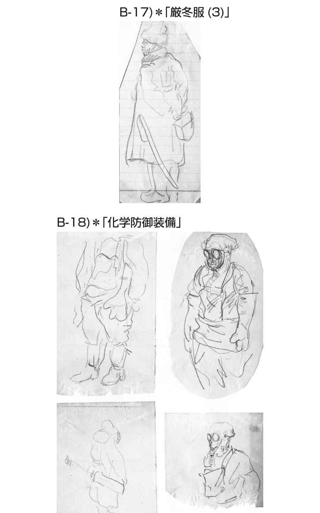
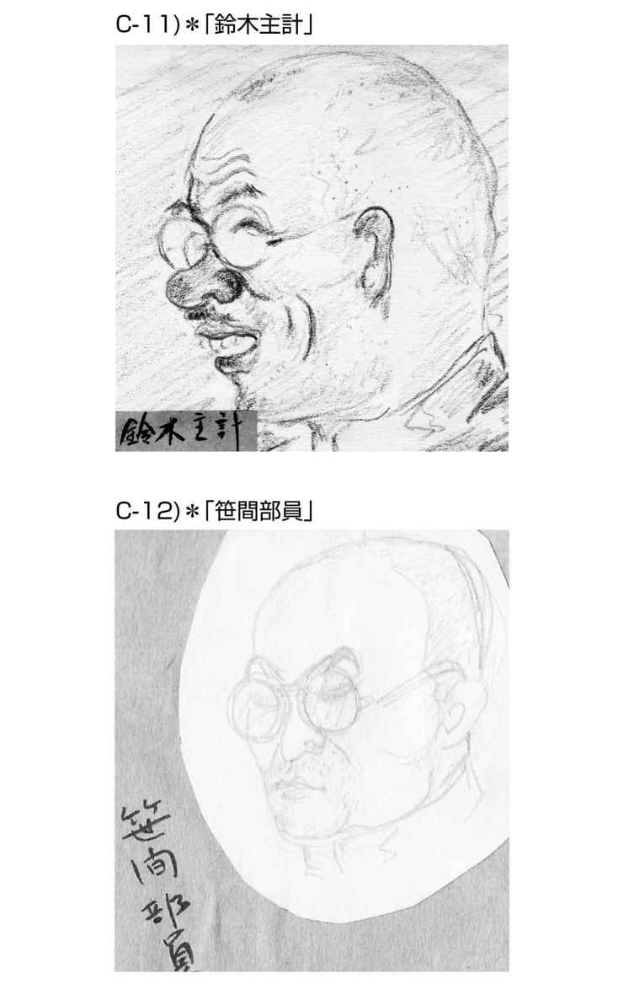
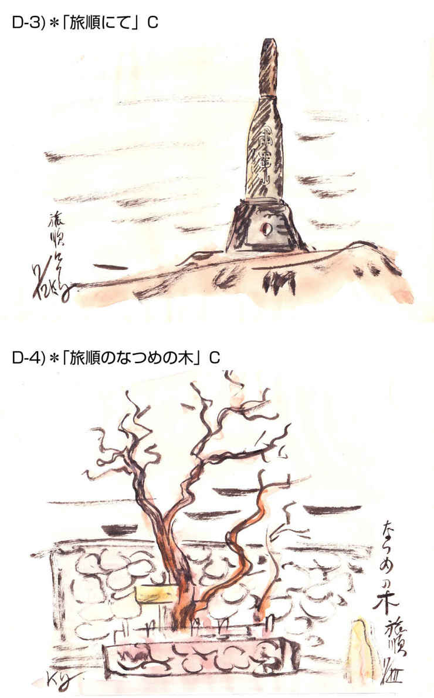
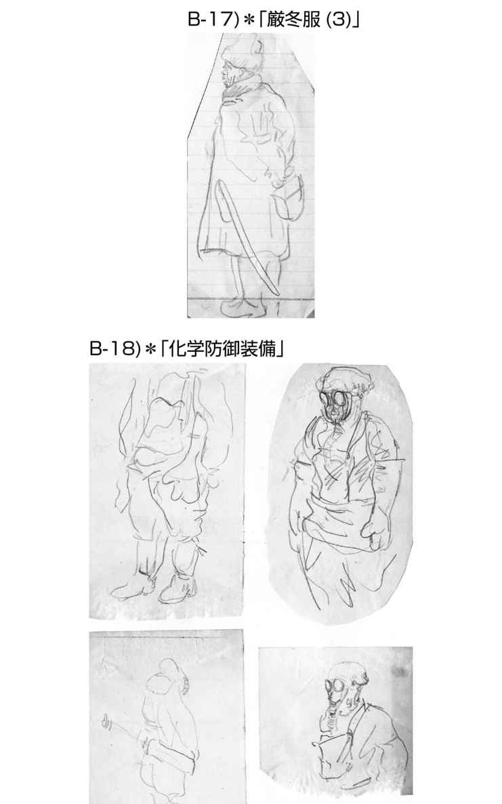
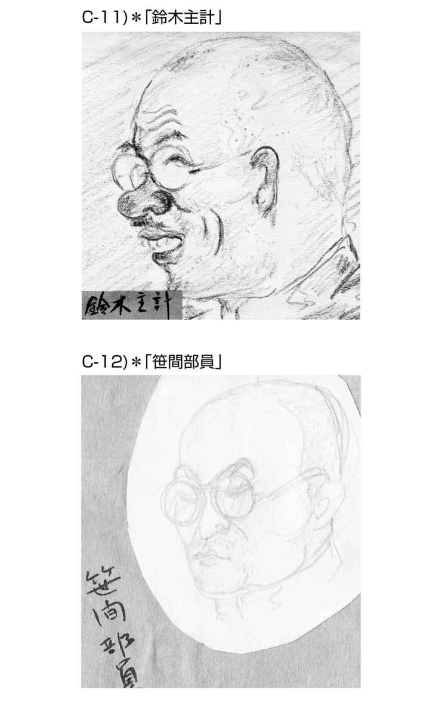
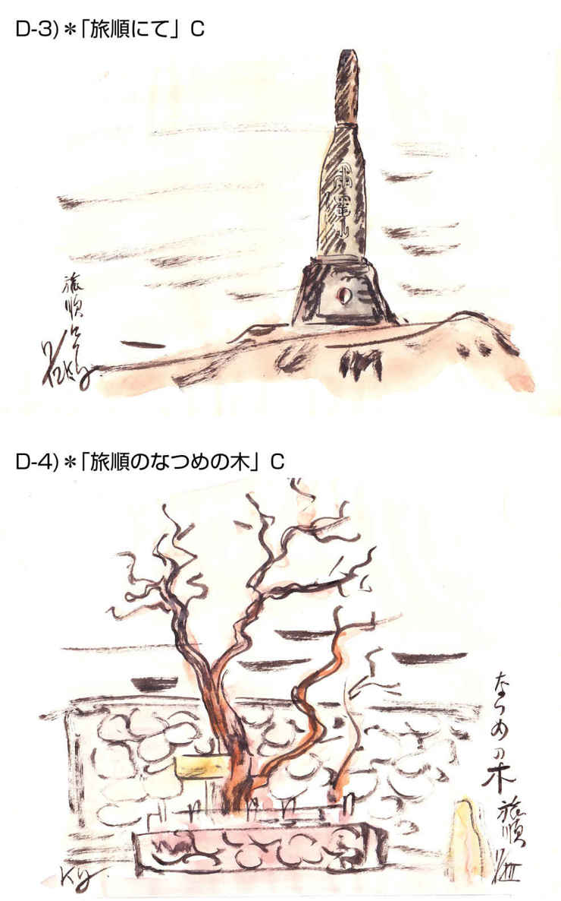
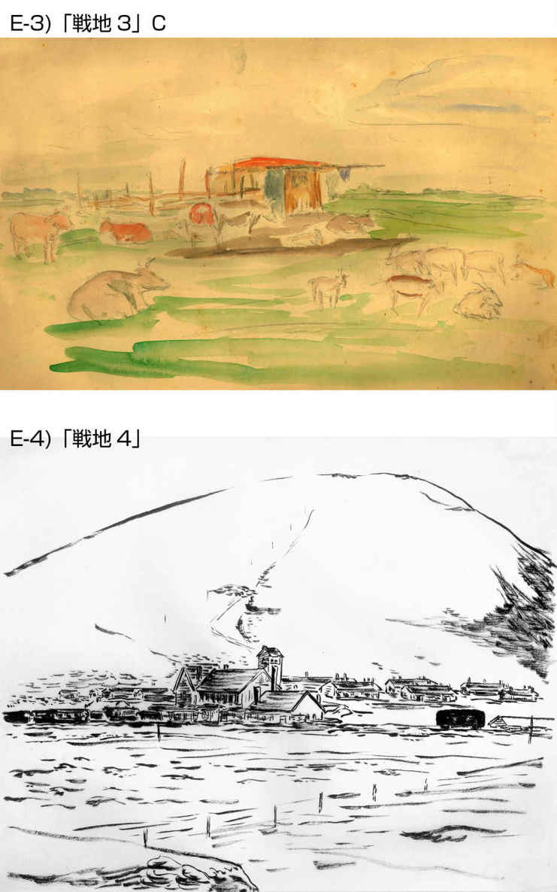
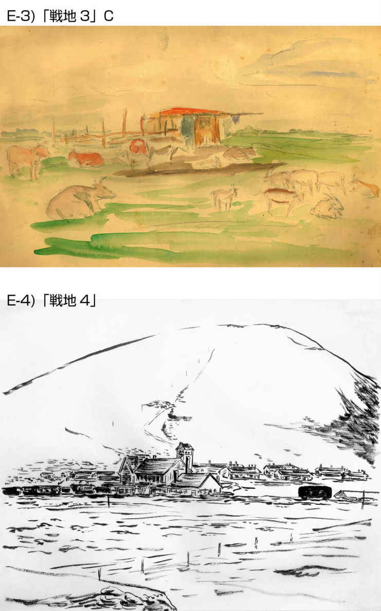

| 宵待草: 昭和の戦争・兄弟参戦実録（漫画スケッチ入り） Human Reader | |
| Northern hermit | |
| MTCJapan (2016) | |
本書は、私の父・湯川
本来、両人は職業軍人ではなく、一九三八年（昭和十三年）に制定された国家総動員法に沿って、それぞれ時期は前後するものの学校卒業後、直ちに徴兵に応じ、軍人としての教練を受け、北方の戦場に赴いています。
欣一の所属部隊は札幌の歩兵第二五連隊で、日ソ国境紛争に端を発したノモンハン事件に参戦、その収束後、対ソ国境警備のための樺太（現在のロシア連邦サハリン州）に置かれた日本陸軍第八八師団に異動、その後道内の部隊に赴任し終戦を迎えています。
しかし邦三は、一九四五年（昭和二十年）八月十五日の終戦時は、樺太国境警備の残留部隊に配属されていたことから、ポツダム宣言を無視したソ連軍の侵攻により捕虜となり、ソ連本土に連行されたすえ、エラブカ（ソ連人でも恐れられていたという重罪思想犯監獄がある地）の収容所に抑留されました。そして終戦二年後の一九四七年（昭和二十二年）に運良く復員できたという経過を辿っています。
欣一は医師として、邦三は獣医として応召していますが、軍隊における医師は、兵士や軍属の傷病治療のほか、部隊内の疾病予防のための衛生管理が主任務であり、読者の皆さんは本書の中で欣一の手紙や漫画スケッチなどの中からその内容を知ることができるでしょう。一方、獣医は当時戦場における兵士や武器等の運搬になくてはならなかった軍馬の管理が重要な任務でしたが、邦三は時には一般の兵士と共に諜報活動やスパイ探索、また極北の地での奇襲攻撃を目的にしたトナカイの飼育なども命じられ、広範囲な活動に関わったことが回想録の中で語られています。
さて、私がこの本を出版しようと考えた目的ですが、職業軍人でもなく今で言う学校出立ての専門職が、臨戦態勢の軍隊の中で、いったいどういう状態で任務に対応したかを、今の世の人達がそれぞれの立場で、その時代の背景を考えながら何かをくみ取ってもらいたいということが第一の理由です。
さらにもう一つ、次代を担う人達、中でも組織に生きる人達に、この本を通して次の様なことを考えてもらいたいという私なりの願いもあります。
（１）ストレスの多い状況の中で、自らを正常に保つためにはどういう精神のあり方で自己をコントロールすればよいのか。
（２）窮地の中でうろたえず、いざという時に対処できる力量はどういうところからくるのか、それを組織の人材に平素からどのように養うべきか
（３）少ない力で最大限の効果を挙げ得る力ある集団を育成するためには、どのような人材の組み合わせで、それをどう機能させるべきか。
このことについての私個人の見解については本書の「おわりに」で述べさせてもらいますが、皆さんへのその願いを出版に託する理由について、ここでもう少し説明をしておきます。
私は、これまでの人生で教育やマネージメントの世界に身を置き、四苦八苦して何とかここまで生きて来られたのは多くの方々にお世話になったからこそであり、今においても引き続き若い皆さんが応援してくれていることについて、大変ありがたく思っています。そしてそれらの人達の中から、私が人生で得たことをこれからの人たちに語り残していってもらいたいという要望があることも知らされました。
それはどうしてなのかを私は考えさせられました。
『現在、時代が進むほど顕著になってきた若年層の都市への流出や核家族化などの傾向が、人としての生存に必要な過去の生活経験の伝達経路をますます狭めてきているからではないのか』、『それに加えて、身にそぐわない現在の情報過多の世情のために、果たしてその中のどれが本物で自分の助けになるのかを、親身になって語り合う相手が乏しくなり困っているのではないのか』、『コマーシャルベースや自己顕示一方の風潮がはびこり、本当に必要な情報やアドバイスを得られるチャンスを見失いがちで、疑心暗鬼の中でもがいているのではないのか』などなど。
年配者としてのこのような率直な心配から、現役引退後に自分のウエブサイトを開き、私の所感を書き込んだり、若い人達の「みちしるべ」としてそれぞれ違う切り口から人の生き方を説いた本を世に出したりしてきました。そして、その結果を調べてみると、読者が続いていることが分かり、また書評や、いただくご意見などからもそれなりに皆さんのよりどころになっていることを知り、何とか少しはお返しできていることに安堵しているところです。
このようなわけで、今般、自分の肉親の残した、しかもそれが、この国が国際的に見て今なおその後遺症で苦しんでいる先の大戦の実録であり、たとえそれはほんの一場面であるかもしれないものの、次代の人達に伝え残しておくこともまた、何かの時に参考になるであろうと考えて編集に取り組んだしだいです。そして願わくは、読者の皆さんがこれらの記録の中から先に述べたような課題について考えてもらい、さらにはそれをもとにして新たな事を学んでいってもらえるのであれば、必ずやその人達の成長に繋がるものと思ったからであり、このことが本書の出版理由の一番大事なところですので、ぜひご理解頂きたいと思います。
なお、本書の背景は、前述のように今もって影響が強く残っている先の大戦であり、そのため、たくさんの記録と共に書籍出版が続いています。私自身もそれらの多くの資料を読み、それらが書斎の一角を埋めています。しかし精査してみると内容は
（１）秦 邦彦著「明と暗のノモンハン戦史」ＰＨＰ研究所、二〇一四月年十二月第一版第二刷（参考資料番号24）
（２）宮脇淳子著「世界史のなかの満州帝国」ＰＨＰ研究所、二〇〇七年四月第一版第四刷（同17）
（３）田中克彦著「ノモンハン戦争」岩波書店、二〇〇九年七月第五刷（同19）
（４）高杉一郎著「極東のかげに」シベリア俘虜記、岩波書店、二〇〇九年五月第十一刷（同18）
それでは本文に移りましょう。
これから、ふたりが残した資料を公開するに先立ち、皆さんにそれらの内容を理解して頂くための予備知識として、当人達のこと、その資料の経緯、時代背景などを、あらかじめここで説明いたします。
（１）当人達のこと
本書の下地になっている資料を残したのは、私の父方の実家である湯川家の長男「
なお、他に次男の「
さて、本書に前段に登場する長男「欣一」は冒頭で述べたごとく私の父で、一九一三年十二月に生を受け、一九四七年八月末に急な病のため三十四歳で死去、私が五歳の時でしたので、まさしく早世でした。
後段に登場する三男「
本書の編者である私は、先の大戦の最中、対ソ連戦に備えて
欣一は、東京医専卒業後直ぐに札幌を基地とした歩兵第二五連隊に配属され、最初の軍務地である北満州でのノモンハン事件に参戦、それが収束した後、樺太の国境警備部隊に転じ、昭和十八年そこを除隊した後、釧路の熊部隊（旭川・第七師団がソ連軍や米軍の北海道侵攻に対処するために戦時編制され、北見、釧路などに移駐してつくられた本土決戦用部隊の俗称）付きでいる時に終戦を迎えたようです。その後、札幌鉄道病院の鉄道医として勤務の傍ら、北海道大学において自分の念願であった小児科医の勉強と学位取得を目指して励んでいる最中に、前述のごとく急な病に倒れ帰らぬ人となっています。なお私の苗字が父と異なるのは、後で母が再婚したことによるものであり、湯川家は三男の邦三が継ぎましたが、龍二、邦三両叔父達は亡くなるまで、実兄の息子である私を何かと温かく見守ってくれていました。両人の話によると、欣一は画家、中でも漫画家になるのが夢でしたが、父親（私の祖父）の厳しい叱責により、やむなく医師の道を目指したとのことです。そのようなことから私の手元には本人の夢がこもった作品が残っています。
本書前半にはその中の戦時中、かつ戦地での写生図、部隊の漫画スケッチ、現地の風物画などを整理、選択、編集して公開します。なお、供した資料は一部であり、その他に学生時代に描いた各種多彩なスケッチ、下絵などを含めた作品が残されているのですが、それらは、本書に使った漫画スケッチなどの基礎になっていることが遺作から読み取ることができます。また、学生時代に東京近辺を旅行した際には、暇さえあれば人物や動物のスケッチをしていたようで、残された漫画作品は「好きこそ物の上手なれ」というような腕前で、当初その道を目指していたという気持ちがよく伝わってきます。また、私がまだ幼少の時でしたが、父が自分で作った動く漫画（今で言うアニメ動画）を作成して、近所の子供達を集めて見せ、自分も喜んでいたことを覚えています。それは、私の孫がつい最近まで楽しんでいた「機関車トーマス」と同じような内容で、自分が一コマ一コマ書いた漫画を連続フイルムとして焼き付け、戦後間もない時期に動画にして子供達に見せたのですから、子供達と一緒にいるのが本当に好きだったのでしょう。親から『そんなに子供が好きなのなら小児科医になったらよいのではないか』と言われていたとのことで、軍隊においても現地部隊の軍族の子供の治療にも真摯に当たっていることが、残っている手紙からも読み取ることができます。それゆえ復員後にあらためて小児科学の専門修得に努める中、それが果たせないままこの世を去ったことを考えると、私として万感胸に迫るものがあります。
また、軍隊勤務中においても、移動する部隊のための簡易衛生機器の開発や、将兵の衛生意識を向上させるための指導教育に自分の専門知識や趣味の腕前を発揮し、『部隊の勢力を落とす感染症の予防に対する貢献度大なり』という主旨の部隊長からの表彰状が残っています。
一方、邦三ですが、多方面に非常に器用な人で、良き伴侶に先立たれるも晩年まで公私様々なことに精力的に挑戦しており、自ら作った漬け物なども私のところに送ってくれたりしていました。その合間に自分の回想録のみならず、本家に残されていた自分の兄、すなわち私の父の遺品も丁寧に整理してくれていました。父の遺品は戦前・戦中の物資の乏しい時代の紙に描かれた作品であり、変質して傷みも進んでいましたが、それらを補修し、古い表現や当時の戦況などの分かりにくいところは調べ直して、その解説付きで自らワープロで打ち直してくれていましたので、その配慮がなければ今回の出版には繋がらなかったと思います。
その邦三は、戦雲漂う国際状勢下、時代の要請で開校したばかりの東京武蔵野の日本高等獣医学校で獣医学を修め、卒業前に北海道大学農学部獣医科の市川教授の下で特に馬の伝染病とその細菌検査を学び、その後（昭和十七年二月）陸軍獣医学校に進んで実地訓練を積んでいます。そして翌年の二月に樺太への派遣命令を受け任地に赴いたのですが、その赴任前にすでに樺太の陸軍部隊に居た自分の兄・欣一夫婦の官舎を訪れ、赤ん坊の甥（私）と面会したことも手記に残されています。
邦三の戦場での経緯は後に載せる本人の書いた回想録をお読み頂きたいのですが、日本の敗戦と共にソ連本土に連行され、生死をさ迷うような経路を経てヨーロッパロシアまで送られ、エラブカ（地名）のラーゲリ（強制収容所）で捕虜として抑留されました。そのような中で、自分の命を救ったのは、獣医としての経験、特に彼らも困っていた馬の伝染病に対処できたことが現地のソ連軍に認められたことと、強制労働で有名な森林伐採地域で、まさに運良く料理当番をやらされ、持ち前の器用さで腕を振るったその料理のうまさがソ連軍将校やその奥さん達を喜ばせたことが大きかったと、生前私に語って聞かせてくれましたが、このことが回想録の中にも書かれていますので皆さんも確認できることでしょう。
これは、まさしく「一芸は身を助すく」を地で行ったようなことと言えますが、私は叔父との付き合いの中で、辛い抑留経験をした年配者でありながらも、老いて物事に前向きに取り組む姿勢に感心しておりましたので、運も良かったものの、その運をうまくつかんで呼び込むような積極的な生き方があったからこそ窮地を脱することができたものと、別な観点から評価、尊敬していました。
復員後、当人は時を置かずに農林省、北海道開発局などで道内酪農家の支援に携わり、定年後も畜産コンサルタントとして各地を飛び回って地域産業に熱心に貢献していた姿を思い出します。なお、本人の回想録には戦時中のことより、北海道の畜産業や行政の実態についての記述の方が多いのですが、その辺りのことは本書の目的から外れますので割愛してあります。また、戦争犠牲者への国の対応を憂い、全国強制抑留者協会の活動に関わり、その人達の年金問題や慰霊碑建立に奔走したことも関連資料と共に回想録に記録を残していますが、それも本書の主旨から外れますので省きました。
（２）本書資料の経緯と構成
前述の様に、欣一の弟である私の叔父達からは、生前に、亡き父についてのエピソードを聞かされており、また本家を継いだ邦三自身から父の遺品が渡されていました。
今年の春先にその邦三の息子である従弟から、「家を引っ越すときに整理した自分の父の遺品の中に、伯父さんの遺品もあるのでどうするか」との連絡があり、それを送ってもらったところ段ボール箱が届きました。その中を確認したところ、以前に邦三が送ってくれた以外の資料やコピーの原資料なども含まれており、欣一、邦三両人の関連資料が私の手元に揃ったことになりました。ただ、それら資料は、戦時中のものであることから紙質も悪く、傷み、変色も進んでいるものもありましたが、丁寧に保存されていたことと、邦三が晩年にそれらをワープロに書き出してくれていたものもあり、お陰で必要と思われるものは内容を読み取ることが可能であることが分かりました。さらにその従弟が得意の電子技術を使ってそのワープロ原稿をワードに変換するという苦労を担ってくれましたので、私はそれをうまく整理することができることになりました。このような経緯を経てこの本を仕上げるに至った次第です。
さて、本書の構成ですが、この後に当時の戦争に関連する時代年表を載せますので、それで時代の流れをつかんで頂ければと思います。次ぎに参戦当事者である邦三の回想録から抜粋した当時の世情の説明文を、そしてその後、欣一の手紙の背景となる北満州で起きたノモンハン事件についての邦三の説明記述を頭にして、その後に欣一の手紙を公開します。
なお、欣一、邦三の残した資料は、一世代前の人間のものですから、今では使われなくなった漢字や文言などが入っており、現代の若い人達には読みにくいと思われる箇所があります。しかし私としては、それらを全て今の言葉に直してしまうとせっかくの雰囲気が崩れると思い、字句の間違いや一部の言い回し以外は手を加えずに原文のまま本文中に入れて編集してあります。そのかわり、この事前説明と後の二箇所に組み込んだ私（編者）の解説の中に、特別の言葉や背景などについて説明をさせてもらっていますのでご了解願います。
（３）当時の時代背景
「はじめに」でも述べました様に、先の大戦の前後については非常に多くの報告がなされています。また、そんなに昔のことではないので、読者の方にはその時代を生きてこられたり、またご親族が体験されたことを色々聞いたりされている方もいるのではないかと思います。
東洋史家の宮脇淳子氏が著書「世界史の中の満州帝国」の中で述べられているように、「歴史学というのは、その土台となるべき史実を、できるかぎり正確に提示することこそが任務」ということについては私もまったく同感で、そのつもりで色々な書物に目を通すのですが、ともすれば左右の思想が色濃く入っていたり、自己顕示の強い内容であったりして読者の思想を誘導しようということが見え隠れしているものもあることから、これからの人達のために心配しています。実際の歴史に国際関係の思惑が絡み、感情が入った政治絡みの内容表現になってくると、それは歴史書ではなくなり、それを信じて内外の事象を判断すると事実を見誤る危険性が高まります。このような失敗を繰り返し、結果として痛い目にあってきたにも関わらず、相も変わらず歴史に色々な余計な解釈があるということは、人間のサガと、日本という国の地政学的条件がそうさせているのではないかなどと思わざるを得ません。これからの人達はこの辺りのことをぜひ真摯に受けとめ、深い洞察力を発揮させて、現象から事実をしっかり読み取るように努力してもらいたく願っています。
なお、これから良く出てくる「ノモンハン」という言葉についてここで説明しておきましょう。この言葉の語源は、ラマ教の高位僧職者の職名（法王）に由来し、宗教的信仰の対象とした土や石などを積み上げた複数の道標を部族内の境界として、その辺りをこの言葉で呼んでいたようです。また、近くのハルハ河の両岸は伝統的にハルハ族の遊牧地だったので、そこをこの名で呼んでいたとも言われています。そのようなことで、現地地図上に特定できる明確な集落などがないことから、日本軍は道標付近にあった国境警察隊分駐所の固定家屋をノモンハンと呼んだとされています。一方、この辺りは当時の満州国とモンゴル人民共和国が接する国境地帯でもあり、その境界線がモンゴル側はハルハ河から東に十五キロほど入ったところを、日本の関東軍はハルハ河そのものと主張し合っていました。結論から言うと関東軍がシベリア出兵の時に旧ロシア軍から奪った地図が誤っていたようなのですが、関東軍はあえてそのまま押し通し、軍事衝突へと入っていったことになります。
この両者の国境領域の領土帰属をめぐる激しい戦いは、一九三九（昭和十四）年の五月十一日から九月十五日までの四ヶ月に渡り、双方共に非常に大きな損害が出ました。日本では当時の国内に体裁を作るために「事件」という表現で報道されてきましたが、実際は後述するようにそれ以前の戦争の被害や予算に匹敵するほどの規模であり、今ではノモンハン戦争とあえて記述している書籍もあるぐらいです（参考資料19）。
なぜこのように短期的な戦闘でありながら被害が大きくなったのかということですが、この境界の当事国、すなわちモンゴル人民共和国と満州国の背後には、それぞれソ連と日本がいて、その覇権争いとして当時の陸・空の最新鋭部隊が繰り出され、両国がまさに先頭になって激しく争い合ったことが大きな理由でした。
「戦争」と「紛争」ということの定義について、ここで説明しておきます。一般的に、宣戦布告をしたら戦争、しなかったら事変、紛争とされ、また国家同士の戦闘が起きた場合を戦争、組織対国家のような場合を紛争、事変、事件として言われてきました。また事変と事件の違いは単発の事象か政策的背景を揺るがすか否かで呼び方を変えていました。しかし、この名称の付け方は当事国の国内外に対する思惑が強く表れ、損害から見ると事変や事件でも戦争並みの内容もあったわけです。以上このようなことも頭に入れて以後の内容をお読みください。
それでは次章の当人達の残した資料に入りましょう。
最初に第一部として、本書に関連する時代年表を載せますので、それで時代の流れをつかんでください。
その後に、邦三自身が私宛に残しておいてくれた自分達兄弟の参戦資料の解説（時代背景や欣一の所属部隊の説明など）を載せます。
次いで大東亜戦争前のノモンハン事件に欣一が参戦する中で、家族に宛てた手紙、札幌の新聞に載った記事、当人の書いた兵士、部隊、移動中の漫画スケッチ、休暇中に訪問した先の風物画や漫画スケッチなどをご覧ください。
なお、欣一の手紙の中で、特に本書に関係の無い一般の方の名は、そこの文脈を大きく崩さない限り削除した箇所もあります。一方、将兵のスケッチについては、もしや今も消息を訪ねているご親族もおられるかしれないと考え、あえて個人の苗字は消さずにそのままにして掲載してあります。
絵入りの手紙は、当人の書いた手紙文章もそのままコピーして貼り付けてあり、それを現代語に清書した文章を最初に付けておきましたので、原文が読みにくい箇所についてはその清書文と見比べてお読みください。
次ぎに、第二部として邦三の回想録（参戦記録と捕虜収容所抑留記）を載せます。なお、その中には、個人名をそのままに入れておくと、ご当人もしくはご親族の方の名誉に関わると思われる箇所がありましたので、そのような部分の個人名等はあえて削除してあります。
それでも、もし、当方で気が付かない問題点などがありましたら、直ちにとはいきませんが修正変更等致しますので、ご遠慮なく本書の最終ページに入れてある私の連絡先に直接ご連絡ください。
（１）昭和の戦争関連年表（本書に関連する事項の抜粋、編者作成）
一九二六年 昭和元年
一九ニ八年 中国がドイツから武器輸入と軍事顧問招聘
一九二九年 世界的経済不況拡大
一九三〇年 ロンドン海軍軍縮会議
一九三一年 満州事変（昭和六年九月）、中国共産党対日宣戦布告（十一月）
関東軍（日本陸軍）が柳条湖事件をきっかけに軍事行動開始
満州国建国
一九三三年 日本が国際連盟脱退
一九三六年 二・二六事件
一九三七年（昭和十二年）日中戦争（支那事変）
盧溝橋事件（七月）、通州事件（七月）
第二次上海事件（八月）、南京事件（十二月）
一九三八年 国家総動員令法成立
一九三九年 米国が通商条約破棄通告（１月）
（昭和十四年）ノモンハン事件（日ソ国境紛争激化）（５月）
ドイツがポーランド侵攻（九月）
一九四〇年 ドイツがパリ陥落（六月）
日独伊三国同盟（九月）
対日禁輸のABCD包囲網侵攻（America, Britain, China, Dutch）
在米日本資産凍結
一九四一年 日ソ中立条約（四月）、ドイツがソ連に侵攻（六月）
日本軍南部仏印（ベトナム）進駐（七月）
米国対日石油全面禁輸（八月）
太平洋戦争（大東亜戦争）（昭和十六年十二月八日）
一九四五年 二月米軍硫黄島上陸、三月十日東京大空襲、三月十三日大阪大空襲
（昭和二十年）三月二十六日沖縄戦開始、五月九日ドイツ降伏
七月二十六日ポツダム宣言（日本の無条件降伏勧告）
八月六日 広島原爆投下、
八月九日 ソ連が中立条約を破り侵攻開始、長崎に原爆投下
八月十五日 日本降伏、玉音放送、終戦
九月 二日 戦艦ミズリー号で降伏調印
一九四六年 東京裁判
（２）当時の世情説明（邦三の回想録からの抜粋記事・原文のまま）
大正九年（一九二〇年）私（邦三）が産まれた年である。当時の世情は大正六年（一九一七年）に第一次世界大戦は終結したが、世界を驚かせたロシア革命が勃発し、その余波を受けて翌年日本はシベリア出兵の宣言を余儀なくされ、一九二〇年にはロシアの沿海州北部のニコライエフスクで在留日本軍民が数百名虐殺された尼港（ニコライエフスク）事件が発生した。
大正八年（一九一九年）には朝鮮で万歳事件により各地に独立運動が活発となり、大戦後の世界恐慌が日本にも襲ってきた。国内で大正九年に初のメーデーが行われた。また第一回国勢調査の年（北海道の人口は二三六万人）でもあったので父はこれに因んで邦の宇を取り邦三と名付けたそうだ。
その後大正十二年（一九二三年）には関東大震災で死者九万人、行方不明四万人を出し、東京在住朝鮮人の暴動を恐れて多数虐殺し、多数の社会主義者も逮捕惨殺された。昭和三年（一九二八年）には満州で張作林爆殺事件が起き、昭和六年（一九三一年）には満州事変が勃発した。昭和八年（一九三三年）には満州移民計画が発表され、昭和十一年（一九三六年）の二・二六事件、翌年の盧溝橋事件を契機として国家総動員令が発令され戦時体制が強化された。日本は大東亜共栄圈と称して中国・東南アジアに大挙進出して覇権を握り、日本の生命線を拡大しつつ大陸に大軍を送った。昭和十四年にはヨーロッパで第二次世界大戦が勃発し、満蒙国境のノモンハンでは日満ソ蒙四力国の大紛争で日本は数万人の戦死者を出す大敗を喫した。翌年日独伊三国同盟の締結、昭和十六年には日本の米国真珠湾攻撃による太平洋戦争が勃発し、昭和二十年（一九四五年）の終戦まで日本壊滅に至る大消耗戦を繰り広げた。
（３）長兄からの手紙の説明（邦三から編者宛の手記より、原文のまま）
長兄が我が家に残した手紙は、旧宅取り壊しの際小生が入手した十三通で、そのまま保存していますが、ボロボロで宇もかすれてきたので、ワープロで浄書したのが以下の文章です。
昭和十四年元旦から同十五年二月までの期間に亘っており、同十四年五月四日から勃発したノモンハン事件に参加しており、この事件前後に父母、小生に郵送されたものです。
長兄の所属部隊（歩兵第二十五連隊―札幌）主力は関東軍の総予備隊で、連隊砲・速射砲中隊は出動したが大半はチチハルに駐屯し、直接戦闘に参加しなかったため助かったようです。
のんびり屋の長兄が軍医勤務の合間に面白おかしく日常生活や北満の風物を書いていますが、昭和十四年七月二十日の便りでは、事件が益々し烈となり、戦場に出動を予期した遺書めいたことが記されています。
昭和十五年二月二十四日の便りは札幌から在京中の小生宛で、部隊が帰還したことが判りました。
しかし、敗戦を喫した事件の真相は極秘で、一九八九年八月三十日初版のアルヴィンＤ・クックス著「ノモンハン・草原の日ソ戦―一九三九（上・下）」でその真相が解明できました。
長兄の短い人生の中で、この北満の戦場での軍医勤務がどのように位置づけられていたのか？
小生が樺太国境守備部隊に着任（昭和十八年三月）した際長兄が居り、兄弟二人が軍医管、獣医管で勤務するとは前例が無く、大きな話題となりました。
小生が国境から十数キロ南の守備大隊で六ヵ月間勤務中、長兄は除隊となり、会えませんでした。長兄は北海道釧路の熊部隊付きで終戦を迎えたようです。
小生は終戦直前からソ連軍と交戦し、ユジノサハリンスク（旧豊原）でソ連軍に拘束され、シベリア抑留を経て昭和二十二年十一月に帰還復員しましたが、函館で長兄死亡（同年八月）を聞き驚がく、父母の落胆を目にして悲惨な思いに駆られました。余りにも短い人生でした。
長兄の遺稿？として小生の手もとにあるのはこれ以外に有りません。
長兄の有りし日の一端が伺えるかも知れません。 以上
邦三
（４）長兄からの北満便りに関する事件の顛末説明（邦三から編者宛の事件内容の説明書、原文のまま）
ノモンハン事件は、大本営が派遣した関東軍作戦参謀 辻政信少佐の策謀と独断専行により発生したもので、関東軍司令官植田謙吉大将以下関東軍首脳連中も辻の言動を封殺することが出来ず、日本陸軍は余儀なく対ソ戦に引きずり込まれた。
然し、その背景には、大正後期から昭和初期に亘る政治の貧困、経済の衰退による社会不安、失業者の増大等を解決し、国力の充実、発展の為に満洲への進出が日本の生命線であり、軍事的制圧を国策として、大正八年（一九一九年）四月に関東軍司令部が設置され、満洲内の各種権益を護ると共に満洲国を独立させ、日本人の移民を積極的に拡大し、対ソ戦を予期してソ連と国境紛争を重ねたことに因る。
従来、ノモンハン周辺には確たる満蒙国境線は無く、日満、ソ蒙両者の主張する国境の争奪紛争が発生していたが、大規模な銃撃戦となる迄には至らなかった。
事件の発端は「昭和十四年五月四日、ノモンハン近傍の満軍国境警備隊（二十二人）がソ連軍配下の外蒙軍（五十人）から銃撃された」と日本側が発表し、これが事件の主因となった。
五月十一日には日本軍騎兵隊（三百人）がモンゴル領内十五キロ米越境し、モンゴル国境警備隊に挑発的銃撃を行い、ソ連軍を誘発、本格的事件となった。
関東軍は五月四日を事件の開始日とし、同年九月十五日の停戦に至る百三十四日間ソ蒙軍と激戦を交えた。
この間、日本軍の戦闘参加人員は七万五千七百三十六人、うち戦死八千六百二十九人、戦傷九千八七人と発表した。
この事件には正規の五個師団の他、国境警備隊を含む各種特化部隊（戦車、航空、高射砲、野戦重砲等の各部隊）が参加した一大陸上戦であった。
尚、別の発表によれば、関東軍全体の人的損害は、戦死七、七ＯＯ人、戦傷八、六〇〇人、傷病二、三〇〇人、行方不明一、〇〇〇人としており、停戦時の捕虜交換にはソ連兵の帰還者が多かったが日本兵の帰還者は僅かで、戦闘中拿捕され、そのまま戦犯その他でソ連内にその殆どが抑留されたことによる。
第七師団（北海道）は参戦部隊の内最精鋭部隊で、総兵力一万五、〇〇〇人の内、参戦は一万三〇〇人であり、この内、歩兵第二十六、二十七、二十八連隊は甚大な損害を受けたが、歩兵第二十五連隊は連隊砲、速射砲の二個中隊を援軍として参戦させたが、主力は予備隊としてチチハルで待機していた。
第七師団の人的損害は次ぎのとおり。
| 連隊 | 戦死 | 戦傷 | 計 |
| 歩25 | 95 | 109 | 204 |
| 26 | 598 | 783 | 1,381 |
| 27 | 211 | 192 | 403 |
| 28 | 568 | 675 | 1,243 |
| 計 | 1,472 | 1,759 | 3,231 |
| その他諸部隊 | 116 | ||
| 合計 | 3,347 | ||
| 消耗率 | 32.5 | ||
なお、この中には行方不明者が一、〇○○人はいたとされている。
しかし、七師団、とくに、壊滅的打撃を受けた歩兵第二十六、二十八連隊ではその数は定かでない。
①事件の期日的まとめ（発端から停戦まで）
五月四日 満洲国国境警察隊がソ連軍配下の外蒙軍から銃撃された。
五月下旬 ソ蒙軍、約一、〇〇〇人（戦車、火砲五十～六十台）が大挙越境、関東軍一個連隊を派遣したが応戦出来なかった。
七月上旬 ハイラル駐屯の第二十三師団を主力とし、チチハル駐屯の第七師団、在満航空、戦車兵力を投入し大攻勢を行った。その結果、前述のとおり、大損害を受け敗北寸前となった。
九月十五日 停戦
②第七師団の動向
昭和十三年二月 チチハルに出動（関東軍総予備隊）
十三年七月 張鼓峰事件発生しスイフン河に進出
十三年十二月 北海道から初年兵増加派遣
十三年四月 第一期検閲修了
六月 大動員令
六月二十日 歩兵第二十六、二十八連隊出動
（二十六連隊長 須見新一郎）
六月二十一日 歩兵第二十五連隊出動
（関根久太郎―盤井虎二郎）
六月二十三日 歩兵第二十七連隊出動
③欣一配属先 第七師団しゅ重第七連隊の内容
連隊長 本間幸太郎中佐
歩兵第二十五連隊（関根部隊）付軍医
第一大隊 奥田、長尾両中尉
第二大隊 山田中尉、湯川少尉（大隊長 原子正雄少佐）
第三大隊 林大尉、上田中尉
歩兵第二十六連隊（須見部隊）付軍医
第一大隊 中村、神田両中尉（停戦協定後死亡）
第二大隊 松本、肥田両中尉
第三大隊 小沢、工藤両中尉
３─（５）北満からの手紙
ノモンハン戦直前の北満からの便り
長兄（欣一）から父（智賢）への便り
（昭和十四年元旦）
新年おめでたう存じます。
当方誠に元気であります。約一ヶ月余お便りもせずしばゝ御苦情も賜り如何したのかの御心配をお掛け致しました事と存じます。
別に之れと言ふ理由も無い次第で葉書一本でも一寸書いたらとか、長くなくても一言葉ぐらいとお思いの事と存じますが、事実は直ちに三、四本は種々今迄に書いて参ったのですが、いざ書いて差し出すときになると途中に気が変わってそのまま机の中に投げ込んでしまうことがしばゝです。だからいつも机の中には完成したのや未完成の手紙が二、三通は入っているのです。
おや、おかしな子だこと、切角書いたものなら差し出して安心させれば良いものをと不思議にお考へになられる事と存じます。
全く変な次第ですが、こんな事がどうにもならん気持の出て来る事もある僕なのですから一寸始末に終へんです。それで居ても、うん、そうだ手紙を書こう。あんな事も、こんな事も、そうゝ写真など入れてあげたらと考えて居るのですし、家郷からの手紙が無いのを人一倍淋しがる癖なのですから困ったものです。
手紙を何故に書かず、また書いても差し出さずに机の中で密かなため息を吐いて居るのかと言う事は後程述べる事として、新年に当たって、先ず離れて居ても、お互い全部が溌らつとして生活を楽しみ、また広くは東亜新秩序建設に微力を尽くし得るのは誠に幸福な事と存じます。
尚、嬉しきは龍ちゃんの就職決定です。既に龍ちやんから手紙を戴いた時には小官涙の出る程嬉しく、早速お祝いの手紙を差し上げる事にして書いたまま差し出すのを忘れてしまって、先日本棚を整理して封筒のまま出て来てこれは残念なことをしたと思って居りますが、兎に角誠に嬉しき次第です。
輝かしい将来がノン江の氷をあかね色に染めて躍り上がる旭日の様に晴々と望まれます。
龍ちゃん（次男の龍二）
社会の運行に重要な一部門を形成し、多難な東亜の情勢に益々熱と実行力とを要する秋に当たり、無くてはならぬ戦士としての門出、お父上様のお喜び如何程かと存ぜられます。龍ちゃん自身はまた天に昇る様なかっ達な得意な気持であると共に、一方一寸とした軽い安心も覚え、また学生生活から飛び込む一寸とした「はにかみ」と綿の様につかみどころの無い僅かな恐れの様なわけのわからぬものも潜んで居て嬉しい頃であると存じます。
次ぎは邦ちゃんの番ですね。今年は是非成功して下さい。石にかじり付いても頑張るのですよ。すぐ目の前に立派なお手本が有りますね。龍ちゃんの様に意志を強く持ってぐんゝ最後の仕上げを望みます。自分の希望に向かって出来る限りの前進には苦労も多い。皇軍も揚子江があり、黄河があったからこそ日本の二倍に当たる面積を占領し得たのです。試験は揚子江にふらりゝと流れてくる機雷の様なもので、一日及至二日でその運命を決定するものだけあって、運よく通り過ぎれば漢口も陥落する次第で、過ぎれば甘い感傷と想い出でとなりますが、その通過の苦心と苦しみは大凡受験生活を過ごさぬ者には味わえぬ試練です。全力を尽くしても刃折れ力尽きれば恨みには思わぬが武士。然し、戦へば必ず勝たねば負けたことになる。負けると如何なる理屈をつけようと心理的な負担が暫くは追い掛けてきて消えぬ痛手を受けます。
アンドレ・ジイドではないですが狭き門は幾らでも長い人生行路には待ち受けています。これを一つゝ 潜り抜けて行くのも男らしい立派な行為です。
丁度、試験は枕木を止めるリベットの様なもので、小さいものであっても曲がったり折れたり抜ける事があるとアジア号でも脱線も起こるし、再び運転も出来なくなる事があるでしょう。坦々とした真直ぐな立派なレールがしっかり固定されて居れば山があっても河が流れて居ても石炭を増せば登れるし、橋が完備すれば難なく渡れます。林芙美子の「北岸部隊」の中に架橋材料中隊が馬を失いながら部隊の最後尾を重い材料を運びながら長途の行軍ばかり続け、やっと漢口戦に此の中隊が無くてはならぬ役目を果たして重大な勝因を作ったことが書いてあった様ですが、先ず道をつける事が最大眼目です。
是非成功を祈ります。
邦ちゃん（邦三）
御母上様も子供達がこうして夫々に大きくなって離れて行くのは淋しい中にも安心した様な、またがっかり気の抜けた様な気持にもなる事と存じます。
悲しいですね。皆で今迄よりも更に美しい生活を建設する日が近づきます。勿論、只今の日本の全体主義的な状勢は個人の自由安楽を幾分かずつは統制によって束縛は受けるでしょうし、また首相の声明の如く、ほぼ目鼻が付いたのでは無くて、まだほんの始めであり、戦いはこれからなのですから一層苦難と制限を受ける事でしょうが、こんなことに決して恐れぬ覚悟がお互いに必要ですね。
それにしても小官程御両親様のお心を安からしめず苦労をお掛けした子も他にありますまい。小さい時から今に至るまで、やっこら ゝ 後押しをしてもらっての此の道です。そのうちには立派な仕事と安心とをお届け致します。
以上、尻切れトンボの様ですが、今春の第一報であります。
（満洲派遣 斉々合爾 磐井部隊 原子隊）
北満からの便り（長兄から父へ） （昭和十四年一月七日）
（此の手紙は資源節約の国策に沿って裏表欄外もありますから、上手に読まないと何の事か分らぬと思います。）
前略 音信不通の弁（万年筆をどこかに置き忘れて鉛筆書きです。）屡々無音の件に鞭を戴き誠に申し訳無く存じます。あまり御無沙汰して居るので次々と取り止め無く色々の事を浮かぶままに書きつけます。
先ず、昭和十三年十二月八日付けの手紙に「洋服等は御落手の事と思わる」とありますが残念ながら未だ入手致しません。如何な風にしてお送り下されたのか見当もつかぬ次第です。
次ぎに龍チャンのケガの手術まことに結構ですね。一段と男振りの上がる事でしょう。上京したら荻窪の伯母さんも大変喜ぶでしょうね。大変気にして居られましたから兎に角立派になって大いに社会的な地位を確保する事と存じます。
この次ぎは邦チャン、どうも試験を控えて居ると落ちついてスキーも出来ませんね。それでも僕の靴など修理しても出来るのだそうで大変良いですね。
全て統制下の今日、新調のスキー靴など思いも及ばぬという事になってしまったでしょう。体だけは気を付けること。
初年兵に井須雄三（同級だった荒物屋の息子、二年兵です。）が入隊しました。この外、中学の同期の連中が四、五人入隊しましたよ。身体が強くなくては何も出来ません。補充兵だの初年兵だの色々沢山入ってきましたが、随分弱い者も居て四、五日にして入院を予儀なくされる様なのもいる次第で、この所、軍医さんも眼を回しますが、兎に角、それを見るにつけても何はともあれ身体一つです。その上はじめて勉強も出来ます。大いに頑張りなさい。
休暇も休暇らしくなく追われて居る様なせっぱつまった感じでせうが、まあ「ここが敵前上陸の前夜でバイアス湾に上がってみたら月が出て居て敵も無し、打ち振る日の丸嬉し泣き」てな事になると思います。
次ぎは廿五日のお餅つきの件、例年の如くお向ひの歯の抜けたお爺さんが「ホーホー」言いながらつきましたか？。煙突から豆の様な油煙がぽろゝと落ちて、のし餅もゴマ餅になるという風景は如何。そうゝ、お餅と言えば、今小官の住む所は東京屋と言う下宿屋、即ち借上宿舎に居るのですが、此処で十一時頃より三時頃迄かかって廿日の日に餅つきをやって居りました。当番が寝ずに出てトンゝと地を響かせて居りましたが、翌日白いのし餅が重なって居るのを見て、下宿のお爺さんが宅に居たときは、此ののし餅を切るのが僕の役目で四角に切ったり三角にしたりなど、叱られた事もあったんだよと話して笑いましたが、段々に生長して家郷を離れたりすると毎年訳も無く何時もの様にやって居た事が大変懐かしいものになってホフマンの「黄金の壷」の様に無限の美しさがにじみ出た想い出が漂います。
次ぎに銃後後援会や愛国婦人会、国防婦人会の方々が大変力をお入れになって種々御慰問下さるそうで、誠に、こちらに来て居る将兵共々心強く、また、心から感謝する次第です。
全く殺風景な所に住み、和らぎの無い生活、潤いの無いその日々には一寸とした事が大変嬉しいものです。「日本の兵が強くたくましく真剣になって行軍し戦闘を続けるのは誠に厳かなもので、しかも、服が破れ継ぎだらけの袴下を装着していても幸福そうに見えるのは、帰るべきしっかりした美しい楽しい故郷が有るからだ」と火野葦平も言って居りますが、全くそれがはっきり言い表すか表わさぬかの違いだけで皆その心は同じです。軍装した兵が軍歌を歌い、零下三十八度、まつげも凍る中を元気良く行軍に演習に精勣し、北方○○に対する無言の威圧を加えて居るのは健康な昇華された美しさと力強さを感ずるものです。
さてその次は、昭和十三年度末音信不通の間における小官の動静について申しあげます。十一月上旬、演習検閲も夫々終わって一息ついたと思ったら下旬は小官等の衛生部野外作業で札蘭屯に三泊四日の旅でした。札蘭屯は大興安嶺の北東に当たり露人の多い処で中々景色が良く、興安嶺を超えればハイラル、外蒙に入って赤い狐が牙を剥くと言う所です。園部部隊揮下の短期現役軍医が各隊より数人ずつ出て、現地と地図とに依って作戦の演習をやるのです。トラックを自由に乗り回して敵をどう追い詰めるかと大いに頭を捻りました。参謀が一人参加しまして指導するのですが、とんでもない攻撃や全滅に遭ったり等次第に南方に押して急追、師団長になったり、軍医部長になったり、或る時は連隊長、大隊長、下って大隊付き医官になって南下する某軍を追撃、昂々渓東西の線フラルギの大鉄橋を爆破、敵をノンチャンに圧迫、これをせん滅せめて無事昂々渓に。
一夜慰労の宴を張り愉快に帰還、間も無く、十二月二日より三泊四日の大隊付き将校の現地戦術、大隊長に指導されて昂々渓付近、雪中大原野の遭遇戦に、陣地攻撃に頭を絞りましたが、約二十五名の将校は全て歩兵科、軍医は小官一人で戦術は教えてもらった事が無いので、白紙の状態で遠慮して居ったら、大隊長が「湯川少尉も参加した以上問題を解くんだよ」と笑いながら申すので、よし、出来ないながらも書けるところまで書こうと問題の出る毎に苦心すると、かえって細かにあれこれと考えて書く本科の将校よりは常識の発達して居る方が良いと言う次第で、寧ろ原案に的中する事が多く、歩兵科の将校をさんざん圧倒せしめたのは愉快で、大隊長も「湯川少尉は戦略家だね」と褒められると「いえ、そうでも無いですが、何も知らないからかえって大胆な戦略を考えているのですよ」と顔を赤らめてはにかむ当たりは小官も仲々処女の様に「ウブ」なところがあると言う次第です。
現戦もこうして終わったと思うと三年兵の帰還、それ、防疫、身体検査てなわけで忙がしがって居ます。
あーやれゝと一息ついて居ると四日間の飛行隊への兼務を小官命ぜられ、毎日軍用の佐官以上の乗る高級車がお迎えに来て「盤井部隊湯川軍医少尉殿！飛行隊お迎えにまいりました！」と運転手が敬礼するので「いや御苦労、御苦労！」とふん反り返って、衛門にスーッと滑り込むと「気を付け！敬礼！」と衛門司令の敬礼に対して軽く挙手の礼を与えて飛行隊の医務室に到着、医官が誰も居ないので、小官は高級医官。「急性気管支炎、連兵休。次ぎ、某、急性腸炎、連兵休。次ぎ、凍傷、デシチン軟膏塗布、温包就業」「只今、飛行機不時着、一名負傷、手術台に連れて来ました。どうしましょう。」と衛生兵が飛び込む。「どれ」と悠々迫らず、クレゾール水で手を洗って診察すると、顔面、前額部眉根部に約四センチの裂傷、赤い血が吹き出して来る。ガーゼで拭ってそばの衛生兵に「三針縫合準備、手洗ひ」てな具合で手を洗浄。
飛行服で寝ている兵隊に「少し痛いが麻酔はせずに縫うぞ、動くな！」と一応断って針を取り旨く縫合する。
そもゝ外科手術はこれが初めて、講義で聞いたのを思い出して、ままよ、「男は度胸」と心を鎮めてやってみると、旨くいったから嬉しい。
四日間の勤務を終えて原隊に帰り、高級医官三浦少佐殿に報告したところが、「それは勉強になったね。御苦労様」と労らわれたのも嬉しい一つ。
その後間も無く日曜当直で医務室のベッドにのんびり十時迄寝ていたら氷の上で滑って転倒し、これもまた前額部の挫滅創で四縫合を行い、これで外科二色を単独で扱った次第です。こんな事で忙しがって居る中に四年兵の帰還、補充兵の入隊、初年兵の入隊。初年兵が又大変、身体検査だ、それ何だと世話のやけること。終了したのが十二月廿九日。ほっと一息ついたら正月という次第。親しき仲にも礼儀あり、忙しき中にもお手紙を、とは誰か言った様な、言わない様な、そこが、それ、むずかしい。
零下廿五度を下る日が連日となると、また軍医さんの活躍時代、診断の時間が終わってヤレゝと思っていると四、五人班長の引率で初年兵が来る。「どうした？」「凍傷です」「なに？凍傷？よし、きた」と見ると右の耳が真っ赤になって腫大して所々小豆大の水泡もある。圧すと痛い。「第二度右耳翼凍傷」「次ぎ」これは指だ。真っ白で冷たい紫色になっていて感じが無い。
一方は水泡が出来て一本が三本程に太くなって腫れていて猛烈痛い。「何処で何時、何をして居て起きたのか？」「指揮官は誰だ？ 呼んで来い！凍傷を発生させたのは指揮官が悪いのだぜ」と医務室このところ大いに気が強い。
とくに、凍傷に関する限り小官の役目に割当てられているのです。今日の研究会に発表を命ぜられているので、予め作成した調査簿と、それと得意の見取り図を書いて置く。どんゞとやってこられるとこちらは目を回すが、また興味がある将校であろうと、下士官、兵であろうと凍傷と聞いたら調査簿を持って来いと衛生兵に命ずる。このざま、なんとまあーすさまじきもの。
かくして宿舎に帰れば星明かり、帰えるお部屋は三畳間。机と本箱が置いてあるので布団の両端が持ち上がる。窓は二尺と一尺で周りは白壁となると独房の様で、さっぱり慰安にもならない。
徳意さんの御結婚の事、永井さんの男のお子さん出産の事、実にお目出度い事が沢山ありますね。
山田中医は良く手紙を書きますし、大変元気で立派な軍医さんです。山田君のお宅からの手紙や慰間品など殆ど毎日の様に来るので嬉しい様です。小官の場合は、どうも全く親不孝息子で全く手紙を書かず、何時も叱られていつまでも子供臭いのですから処置無い有様ですね。自分ながらあきれます。
然し、医務室は皆仲の良いことではたいしたもので「三浦一家の」と称し（高級医官三浦少佐殿ですから）連隊中誰知らぬ者無く有名なもので、皆元気溌らつたるものです。
小笠原様の南洋行き、恵チャンの事、伯母様の事、末広さんの結婚。世の中は毎日変わって行きます。恵チャンから時々手紙が来ます。
先日輸送のため札幌へ行った奥田軍医中尉殿昨日帰斉、昨夜はお話しを聞いて大いに飲んだら皆トラになってしまいました。
それでも今日の業務に少しの事故も無いのですから。皆、相当なものです。
淋しいと酒など少したしなむようになります。と言ってもそれ程飲めません。
正月の大トラ振りは、いずれまた後ほど。然し、不思議に煙草は吸えません。
吸おうとも思わないのは面白いです。
龍チャン お目出度う。 邦チャン しっかり では 佐様奈良
軍医少尉 湯川欣一
北満からの便り（長兄から母へ）（昭和十四年一月二十日）（軍事郵便）
拝啓 十一日付けお書簡誠に有難く存じます。
どうも何時もの事ながら手紙が無い事をお叱りなされ、自分ながら呑気さにあきれると共に、御心配をお掛けして済まなく思う次第です。前日の手紙も着きました事と存じますが、まあー、これまでの事情は書き送りました積もりです。
山田中尉のお宅から話しを聞かれてやっと満足されている由、周囲の人々から、この頃、欣一さんは如何ですかと間われて「いや、どうも、手紙を一通も呉ないものですから、様子が分からぬ次第です。まあ、兎に角やって居るでしょう」では余りに淋し過ぎる。少々親として世間体も甚だ良ろしくない。困った子供だとお考えの事と察します。
全く兵隊は手紙を良く書きます。書かぬのは僕ばかり。
教練が終わったり、勤務が修了すると、直に便せんを出して頻に何か書いたりして居ります。衛生兵など小官当直の夜など時々回って見ると、薄暗い灯火の下でペンをチョコゝ走らせて頻に書き走らせて居ります。「土と兵隊」にもあったようですが、世間話しがお互いの勤務上の失敗、話しが終わると毎日手紙を書くのが日課のようで、誠に感心すると共に、閑なのを羨む次第です。
小官も閑が無いと言う訳では無く、のんびりした時間も有るのですが、手紙を書く気分が中々出ない。雨が降って風が吹いて、飯を食った事を書き付けるなら毎日一寸ずつでも書けぬ事は無いだろうと疑われますが、之れがまた、偉くならぬと出来ない事柄のようです。また、弁解がましい事を書き連ねましたが兎に角、小官でもこれから一通っずつでも手紙を書こう。そう書いても一年に三百六十五通しか書けないと計算して毎日一通書きはじめていた事も有りましたが、それだけ、またわずらわしくなって、反動として手紙を書かぬ時期がやってきて、お叱りを受ければ受ける程嫌になるといふ困った事が出来ました。
それは、とても淋しくて昧気無い生活になって心が少し穏やかさを失い、柔らかな雰囲気を欲しても容易に得られない状態ではいらゝした心地がして、とても手紙など書けるものではありません。また、書いた手紙はろくな事を述べず、従って破っては捨て、書いては破りする有様で止めてしまいます。
全く何ということ無しにこんな時期が少し続いて毎日が駈け行く駒と消えてしまいます。此の頃は少しく安静平穏の状態ですが、毎日業務が追い掛けて参ります。
初年兵が入って来てからはとても患者が増加し、凍傷患者の続出で、小官、凍傷患者調査を命ぜられているので、凍傷が出ると「それ、湯川少尉」と言う有様です。とても北海道では想像出来ない程凍傷はひどいものです。零下三十八度―四十度迄毎日下がりますので、一寸手袋を脱いで銃を装着したり、行軍中手を摩擦するのをさぼったりすると大変です。よく生ずるのは耳、鼻、手指、足指です。耳が三十分程防寒帽の耳覆いを上げて立って居ると、忽ちローソクの様にコチゝに白色に変じて、摩擦して知覚が回復する時には大きな水泡が生じて真っ赤に三倍位程に腫れ上がるものです。手指等気の付かぬ間に白くなってしまって、帰って手袋を脱がして凍傷なるを知り、大急ぎで処置しても、もう大きく腫れ上がって痛くて眠れなくなり、また、ひどいのになると第三度凍傷を生じ、一寸の間に紫青色に変じて入院して切断を要するものなど生じます。
初年兵も大変です。井須は凍傷では無く胸膜炎入院しました。
十七日より二十日迄連隊の冬期演習ですが二大陵は行かぬので小官は残留、廿四日からの師団冬期演習も参加しない事に決まりました。冬期の演習に二つながら出ないのは小官のみです。冬期演習問、また凍傷患者が増加刷る事でしょう。手ぐすね引いて待って居ります。
衛生講話は此の頃毎日の様にやって居ります。衛生法、救急法だの、結核性疾患予防に就いてだの、一酸化炭素中毒についてだの、または凍傷予防法等々に一時聞及至一時間半の長講を中隊の兵を集合させて講義します。チョークを持って黒板に得意の絵を描きながら説明するのもとても旨くなりましたよ。それだけ前日の準備が大変で、準備を出来るだけ完成して置かないと中々机に向って上手に要点だけを話すのは難しいものです。
顔をみつめて厭きの来ぬ様面白くダレずに話しをするのは相当修養を積まぬと出来るものではありませんが、此の頃は自由自在に話しが出来るようになったから、心臓が相当強くなったものと思います。
十日ばかり前より将校家族の六ヶ月の娘が気管支肺炎ですので毎日往診に行っています。六時頃隊から帰って飯を食べ、風呂から上がって出かけると八時頃、一寸距離があるのでマーチョ（馬車）に乗って出かけ、診察して処方せんを書き、帰って来るのは九時半過ぎで、疲れている時は嫌になります。
只今帰って来たばかりのところで、もう十一時です。これから本を読むとなると床に入るのは一時を過ぎます。とても暇が無い事になります。
将校の家族携行は誠に結構ですが、子供連れはよく病気になります。それに軍医だからと直ぐに往診を頼まれ、それも好意で行ってやるものを、当然だという顔付きをしているのですから面白くありません。しかし、子供の病気そのものには興味があるので、さて、診断が始まると、とても可愛いので、熱心に注射を打ったり、薬を処方したり、芥子湿布を行ったり大変です。従って、小児科の原書で再び勉強を始めました。毎日本を読むのが楽しみです。
この女の子は大変急性で四十度台でしたが、少し良くなって来ました。もう一息の所です。
家族がどんゞ来るので患者も増えてくるようです。然し、未だ家族に対する診療の義務はありませんので、行くのは勝手ですが、頼まれれば断る訳にはいかず、行っても当然だと言わぬばかりの顔をされて「未だ治らぬのですか」
とうるさく言われると、「勝手になすったらよいでしょう」と嫌になる事もあります。
隊の診療、書類作製、調査に加えて家族診療は負担が重すぎると、こぼし居ります。
まずい飯を食って本でも読むさ！こんな時に何も知らせずに時々こんなものが好きだったっけ、あれも少しだけど嬉しがるだろうと、心の届いた慰間袋でも来たり、愛情深い手紙など有ったりしたら、旨くない酒など飲みに行かないでしょうね。何れを見ても殺伐で潤いの無い生活。林芙美子の「漢口従軍記」ではないけれど全く愛に飢えて居る人ばかり、とんでもない溝にも落っこちる。
さて、紙が無くなったから苦情も之れで止めましょう。
山田君は益々元気。お正月は一日、二日山田君と一緒に寝ましたよ。大いに飲み正月をやりました。一日二日三日と飲み続けたら声が枯れました。そう飲めもしないのに騒ぐ時は一番騒ぐんです。
手紙を上げないで心配を掛けて済みません。然し、便りを待って居るのは寧ろ当方です。何も言いませんが慰問品が時々届くのは素晴らしいとロマンチックな考えで居ります。留守宅渡しが全額なので、食費を支払うとお小遣いがほんの少しで全く何も無い時も有ります。ボーナスも無いのでがっかり。
さよなら
読み返して見ると、何を書いて居るのか分からぬ有り様で、そのうえ乱筆ときていて自分ながら読むのに骨が折れます。書けば切りが無い。これから大いに暇を作って字を書きます。
佐藤徳意様、誠におめでとう存じます。僕が居たら高砂を謡って上げた？のですがね。そうゝ二日には三浦少佐殿の官舎で岡村中佐殿と連吟をやりましたよ。初謡いです。これから時々出かけてお教え願う事にして居ります。
北満からの便り（長兄から父へ）（昭和十四年一月廿六日）
拝啓 その後、当方益々元気で勤務して居ります。
廿四日より師団冬期演習で三浦少佐殿以下各大隊より一名ずつ出場、他は在隊勤務中で誠に呑気な有様です。
此の頃は最も寒冷の時期で零下四十三度迄下降する。寒温計を見ると一寸驚きますが、次第に寒くなって来たので実際に感ずる皮膚温は特に痛烈には感じません。然し、到る所ガンゞ凍結するので大変です。一寸油断すれば水道など忽ち凍りついて修繕が不可能となり、三月にならなければ融解する様子が無いのですから困りものです。馬の水桶も、流し口も、下水も、水の有る所は全く役に立たなくなります。道路は硯の面の様で、転倒してしばゞ捻挫を生ずるので、医務室もこんな患者を診療します。凍傷、捻挫、急性咽頭炎、急性気管支炎等は時節柄多いのは止むを得ません。
先日来、往診に行っていた六ヶ月の女の子は気管支肺炎の診断の下に、七日以来連続治療を続けて居りましたが、もう殆ど所見が無くなって、お乳も良く飲む様になり、回復近いと思われます。大いに小児科医としての腕を振るう事が出きて自分ながら嬉しい次第です。
家族携行が許可になりましたので将校家族が増加すると色々な病気が発生して軍医も隊の仕事の他に副業を強いられるので参る事があります。たいてい一―二人の往診患者を持たされて居るのも面白いでしょう。
小官の此の小さな患者は往診を頼まれた時には大変な有様で入院させようと一時決心しましたが、どうせ此の世には小児科の専門医が居ないのだから全力を尽くして治療することに覚悟を決めて七日以来幸に携行した小児科の原書で毎日再び勉強し始め、新しい出来うる限りの薬と方法を行う事にして、毎日夕食後往診に行き、処方せんは二日毎に書いて薬局に処方を行わせ、一方注射療法を行い、此の頃は殆ど良好に成った次第です。一時は高熟が続き食欲は無くなり大変危険な時も有りましたが、全く子供は弱ると処置無き迄に悪くなって、母親も為す所を知らずと言う次第。ここがお医者の腕の見せどころで、希望を持たせつつ、一方重患だから処置を怠らず「小官の言うことを殆ど実行しなければ不可なり」と教えて、次ぎの日の所見によって前日の方法如何が著明に現れてきます。大人は感情が入り勝手な行為をするので、長く診療を行っていると途中で不愉快な気分になって来ることが屡々ありますが、子供は客観的立場に立って処置し得るし、一方母親の絶大の依頼と子供への愛情が濃厚になれば眼に見えた治療をするのですから嬉しく、小官、矢張り小児科医の方は今もって興味がある次第です。
此の頃は毎日読書と思索に夜の大部分が費やされます。原書を読んだ時間の後には種々の文芸を楽しみます。とかくピエル・ロッティのアフリカ生活の様に殺伐荒涼の北満では心の慰安の無い寂しさに引きずり込まれるので、これを脱却する為には美しい物語や愛情の心理的過程を描いた文章を求め、或る時は大きな人間の魂に触れ、再び科学性から遠ざけられた生活を少しでも科学への思考力を持ち続けようと努力する事に長夜の楽しさを見出します。しかし、それでも満たされない空虚な響きを心に感ずる時には友と連れ立ち、星凍る深夜、灯火のおぼろなるを眺めて「カッゝ」マーチョに鞭うち、ひと時の快をビールの泡に浮かせる事も有ります。
勤務中には覚えぬ落莫たる気持に許し得る道を求める、ひたすらな気持は此の地に来ている若い将校の何もが持つ人間的苦悩です。これをただ解決する方法を求めて生ずる道程や、結果は種々でしょう。
大分筆が細かな心理に迷い込んでしまいましたが、これで勤務中は誠に明朗で、次ぎゝ治療に、事務に追われて居ります。
次ぎに、以下の事に付きお願い申し上げます。
小官の書棚に「小児の栄養障碍に就いて」の書籍（一冊）と、木村と言う人の「病理各論」という表紙の青色で、「Pathologische Anatomie」と独語で書いた本がありますから、これを御送付ください。
以上二冊です。
北満からの便り（長兄から父へ）（昭和十四年一月三十日）
御書簡誠に有難く存じます。同封下されました新聞記事、既に大毎紙上にて知り、現在斉々哈爾在住の山田中尉、湯川（盤井）、神田中尉（須見）、古屋中尉（中島）の四人が集まり、涙を流して少佐殿の御英霊の冥福を祈り、早速弔電をお国元に打ち、各々五円僅かでもと集めて山田中尉が代表し香典と共に弔文を御霊前に差し上げた次第。
全く旭川における教育では忘れぬ事の出来ぬ方でした。いまもって近くに居られるような気持です。山田中尉と二人でその頃の様子を語り合って感激した次第です。
洋服と電報の間違い、大笑いです。
また此の頃、仕事に追われて居り手紙が怠り勝ちです。
先日来往診していた子は全く快癒しました。嬉しいです。広瀬様と言いますが、御尊父様が来斉中でしたが来月初め帰札するそうですから、近況をお知らせに家に参るかも知れません。色々小官の元気な様子が聞けると思います。楽しみにお待ち下さい。
北満からの便り（長兄から父へ）（昭和十四年二月七日）
拝啓 北満も次第に春めいてまいり、零下廿度台を上下し、日中では零下十五度程で随分暖かくなって喜びあっています。
兎に角、いくら寒くとも曇天の無いのは気持の良いもので、毎日雲一つ無い澄んだ青空で、それにまた雪は全く降らぬと言って良い程積雪も少なく、ただそれがかんゝに凍結して硯の面の様になって居るだけです。
邦チャンもいよく決戦が近付きましたね。時夕、ふと白分の時の事を思い出して、何れにせよ苦杯は昧合わせたく無いものだと祈る次第です。どうか是非とも合格する様に。
龍チャンは試験その他で忙しい事だと思います。行く先の決定した身は何と無く落ち着いた感じでせう。
新聞で見る統制問題で大分各方面混雑したり、困った事などもある様ですが、その圈外にある場合には、そんな事もある様だという安心感が有るようです。
今年は札幌も大変な大雪だそうで、山田中尉と良くスキーの話しなど交わしては、雪の無いのと言ってもよい平地ばかりの野原を眺めては白いシュプールの跡を懐かしがって居ます。父上様も時折スキー行など大いに元気の良い様子に誠に幸福な感がします。
母上様にも何かと忙しき事が次ぎゞ追い掛けて来る事と存じますが、暖かくなって来ると呑気な時間も出来て楽しみも味合える事でせう。謡曲の会など有りますか？ 時局柄派手には出来ぬと存じますが、多様な楽しみもあっても良いですね。
先日お願い致しました書籍、雑誌の類、鶴首して待って居ります。
成る可く早く到着する様お願い致します。
今月五日（日曜日）に以前居た東京屋なる借り上げ合同官舎の三畳間から園部部隊合同将校集会所に移転しました。六畳間に二畳の予備室が付き、スチーム暖房で以前と比較すると素晴しい所です。但し、大佐参謀長などお偉い方々と同列の部屋なので食事の時間は少々堅苦しい感が有ります。隊迄三十五分掛りますが、以前の宿舎と比較すると雲泥の差があるので喜んで居ます。あまり文旬を言ったので換えてくれた訳です。
最近は宿舎に帰ると大抵は読書で過ごします。医学書を約一、二時間勉強すると、あとは文芸に親しみます。柔らかさと情緒や潤いの無い生活にはこの方が一番で一日一冊の割に読みます。最近読んだ物を一寸書いて見ますと随分乱読の型ですが、 マーガレット ミッチェル女史の「風邪と共に去りぬ」、メリメの短編長編、横光利一の「時計」、丹羽文雄の「在？」、谷崎潤一郎の「葦刈り」、ピエル ロッティの「アフリカ騎兵」、石坂洋次郎の「若い人」、福田清人の「若草」、川端康成の「伊豆の踊子」、火野葦平の「兵隊もの」、パールバックの「母の肖像」、石川達三の「結婚の生態」等々、大いに新知識と情操を養い、雑誌では文芸春秋、中央公論、改造等、新聞は朝日を取って居ます。
堅い本では人類学概論、実験医学概説、続・勘の研究、雪、蛙の生理などを読んで居ます。
本を読む楽しさは他に比較するものを見ません。一日の労苦を忘れてその中に溶け込んで寝る時には全く充実した気分がして最上の楽園に遊ぶ次第です。
一方、将校としては種々の宴会が屡々開かれて痛飲する機会も相当有ります。と言って未だ大した飲めもしませんが、赤くなって愉快になるのは事実です。今時、煙草を吸えぬ奴など全く無いと言ってよいのですが、何という事なしに吸えぬのです。火野葦平の「煙草と兵隊」を読むと煙草の昧が身に浸みる様に思われますが、吸わぬだけに煙草について書いた文章を味わうと素敵に美化され楽しげに感ずるのは面白いと思います。
困るのは衣服の問題です。種々の宴会が有っても堅苦しい軍服では弱ります。皆和服だのその他私服を着ることにして居ますので、小官の様なのは全く不便です。殊に官舎に帰っても隊に居る時と同じ様に寝る迄軍服ではしゃちこばってしまいます。
起きてから寝るまで毎日一つの服での生活は兵営内だけの生活ですと良いのですが、帰宅してからも同じでは気持の上のゆとりが無く、一番困るのは外出です。若し、私服が出来て居りますのならば至急お送り下さい。若し、無いのでしたら洋服でも良いと思います。学生時代ならば朝から晩まで一つの服でも平気ですが、対人関係の多い所に飛び込むと不便この上ない事です。
いよゝ困れば高価ですが当地で何か私物を用意する積もりです。尚、八十円程御送金お願いします。
書籍費、被服代、装品費、宴会費等です。新官舎は雑費が以前より少々掛ります。
在勤加俸だけの生活は、食費、将校貯金、酒保代、全将校集会所宴会費など引かれると十三、四円内外で、これを書籍や二、三回のお付き合いでは皆無となり、月の大半はマーチョ代も無いという次第です。
時々出張などが有ると不意に小額の金がお小遣い用に入る位では弱ります。
以上、ごたゞ書き連ねましたが、何も不平を言っている訳では無いのですから、誤解なさらぬ様に。
先々週の日曜日、或る将校の結婚披露宴に列席しました。種々の事情を小官に相談され、これに対して少し解決策を指示して上げたので感謝して居りました。結婚など全く無経験な者に聞くのですから不思議ですが、これは医者としての立場があり面白いと思います。
写真は最近あまり撮りません。寒いのでカメラが凍りシヤッターが動かなくなる事が屡々あります。また、下手なのを送れば送ったで、さんゞ怒られますから送らぬ事にしました。人から何だかんだと言われますと全く益々下手と思われて嫌気がしてきます。 以上 乱筆のままに。
北満から邦三への便り（昭和十四年二月廿四日）（満洲国興安北省阿爾山軍事郵便気付 原子部隊本部―東京市杉並区高円寺―〇〇宅気付）
その後御元気の事と思う。お正月休みで帰省された当時の父上様、母上様のお喜びは時折りの便りに見られて大変嬉しく、殊に「邦三が良い若者になったのに大変楽しく思った」とあったのは両親の子に対する面が伺われて面白く、また、感激しました。
伯母様の病気で四、五日早めに帰られたとの事、毎日お見舞いに上がった事と思います。経過は良好で退院されたとの由、当方も大変安心しました。
お年なので大変案じて居た次第です。
東京の下宿生活は如何ですか。夫々の環境で時局柄大変な事と思います。
自分の学生生活を振りかえって見て同様かどうか色々と想像します。音楽も大変上手に成られたと思いますが、何でも一つ趣味を作っておくと、特殊な環境に立った時に良い事が有る様です。
乗馬はどうですか。先日の母上様の便りには、長靴を作られたとか。それが条件付きなのも、また面白いですね。可及的条件を満たすべく努力して下さい。
龍兄さんから手紙がありましたが、大変忙しい事とか思います。
小官も筆不精で、書き始めるとまたやけに書きますが、書かぬ時には一筆も書かぬのも性格でせうか。
当地に来て、昨日二月分の俸給を貰いましたが、山の中ではただ食うだけの事ですから、少々ですがお小遣いにもと金十円也同封しました。別に改まって差し上げるものではありません。一寸思いついて小官の過去を想い出して急に想い付いたものですから、どういう風に使用されてもかまいません。
また、兄貴のやつ、何を考え付いてこんなものを入れてきたのかと思っただけで十分です。
宅に手紙を書いていますか。先日の母上様からの手紙によると、シロというアイヌ犬が居るそうですね。犬などの嫌いだった母上様が可愛がって居る様子を思っただけで、何となく皆子供達が飛んで行ったあとの空虚さが深く感じられるようです。
やっと今日になって封書が許可になって書く手紙ですが、書きだすと種々乱雑に書きながしてしまいました。時折り東京の話を書きよこして下さい。
あまり堅くなって書かずに、何でも思い付いた事を書きながしたのや、一寸したエピソードなどとても面白く読むんですよ。
先日の母上様の便りの中の「馬鹿女の事件」（きつと知っていることでしょうが？）など何か機会有ると戦友に話ししては面白がるのですが、とても良いものですよ。別にそれを種にして飲むというのではありませんが、何時も鼻を付き合わせての生活の中に、全く例の無い、そして罪の無い事件の手紙も、この地では立派な慰問になります。
おやゝこれは手紙の請求となりましたが、そんな積もりで無く、気が向いたら書きよこして下さいと断っておきます。
では 同封のものを添えて一筆かきました。書留でありませんから受け取ったらすぐ返事をください。
北満からの便り（長兄から父へ）（昭和十四年三月四日）
拝啓 為替及び雑誌、慰間品等落手致しました。誠に有難う存じます。
書籍早速読み初めて居ります。薫製、その他、中に柿など入っていたのは誠に嬉しく存じました。
靴でも只今兵隊用の防寒靴下を履いておりますので、大切に保存して居ります。演習に参加すると忽ち破れてしまいます。
雑誌の中で「小児科診療及び内科小児科中央雑誌」は到着しましたが、同時にお願い致しました「治療と処方」はまだ参りません。もう恨みませんでしたら、今月号からでも宜しいですから、お送り下さる様御足労お願い致します。
もう当地も全く春めいて札幌の雪融けよりも早く、その状態は同じで道路に馬糞が流れております。三月の終わりには蒙古風が吹いて来る事と思います。
将校宿舎も大変住み心地良く、此の頃の生活は大分落ち付いたものです。
邦チャンの試験は如何ですか。龍チャンはもう東京でしょう。
今日は送り物のお礼までに。少々風邪気味で頭痛がしますので、簡単ですが修了します。 敬具
北満からの便り（長兄から父へ）（昭和十四年三月十五日）
拝復 御懇切なるお手紙及び小包拝受致しました。
小包は丁度当直の土曜日でしたが一寸帰舎して紐を切る手ももどかしく大急ぎで開きました。
子供の様な軽い興奮を覚えて小さな手鏡を前にして袖を引っ張ったり、襟の揃わぬのを気にしたり、誠に微笑えましい情景を展開しました。自分ながら愉快でたまらなくなって、鏡に映る笑顔に思わず顔を赤くするなど、全く童心そのままです。
全く手紙の通り、袴は正式に着用した事が有ませんので、手紙を読みつつ着用しましたが、紐が大変むずかしい。幾度もやって見ましたが上手に出来ぬので、日本服の着方の困難を感じて誰かに必要を迫られた時に教わる事にして止めた様な有様です。いずれ、和服姿の写真をお目に掛けます。
只今は連隊で興安嶺迄十二日間の大行軍中で、連隊中が殆ど出かけて居り、初年兵は昨日よりまた行軍に出かけ、留守勤務は医務室では奥田中尉殿、小林中尉殿に小官の三人で、一昨日帰営した高級医官とが、のんびりした気分を昧わって居ります。行軍部隊は十七日に帰営する予定で、最近暖かくなったと言っても夜間には相当気温が低下しますし、北風は耳を痛めます。
丁度只今、興安嶺に着いた頃で相当寒冷の事と思います。
山田中尉殿、長尾中尉殿も満馬で出かけましたが、元気の事と思います。
二月廿八日、三月一日の両日関東軍検閲演習に傲夜で一睡もせず、行軍と演習を雪原野の中で行いましたが、馬上では寒く、歩くと重い防寒長靴では直ぐ疲れるという次第。馬に乗ると轡を絞めたまま、つい、うつらゝとし始めて、上まぶたが自然に下がってきてがっくり前にのめるので、ハッとして気が付くという次第。兵隊も歩きながら眠り、前の背嚢に頭を打ったり、休憩時間に如何に短時間でも雪の中にごろりと横になって大きないびきをかく有様。将兵共に疲労を重ねて二日の演習を修了した時にはほっとしました。
兎に角、徐州戦以来長途の行軍後の戦闘と言う事が重大なる問題なのですから、疲労が回復しない中に戦闘行動に移る事が重要で、何時の演習でも大変で全く実戦主義です。
邦チャンの試験如何ですか。合格の報を大いに待って居ります。パスしたら電報で願います。
龍チャンはもう上京ですね。お母上様も大いに苦労のしがいが有る所ですね。着物を作られたそうできっと立派でしょう。他の連中に負けぬ様に大いに仕事を張り切ってやって下さい。
東京の伯母様、恵子様から時々お便りを頂きます。お返事を差し上げる積もりで何時も伸びます。ニー三日中にお便りする積もりです。
二重回し、その他も大いに期待して待つ次第です。小官、紅茶や角砂糖は、わざゝお送り下され無くても宜しいと思って居り、将校集会所酒保で市価より安く手に入ります。紅茶は昨年此処に来た時に持ってきたものが昨日無くなりました。丁度手紙が来た時に無くなったのも面白いと思います。別に物に不自由はして居ませんが無ければ無いで随分無茶な事もやります。学生生活の延長の様な生活をして居ると思われれば間違いありません。茶道具など面倒で、茶碗が有っても小さいので写真用のガラス製の液量器を愛用したり、薬缶のまま電気コンロでお茶を沸騰させたり、四―五人でスルメを食いつつ十五―六本のビールを抜いて、口角泡を飛ばしてそのまま床の中に潜り込んで、朝になって部屋の乱雑にあきれて当番に掃除させたり、お母上様が見て居られたら「これは、これは」と早速お小言を戴くかも知れない様な事も有ります。
一昨日は軍医部長が閣下に進級栄転され、新軍医部長の就任の挨拶があった後、軍医ばかりの宴会がありましたが、十二時迄二次会で痛飲しました。
着物は丈も丁度良い様ですが、袴が少々短くは無いかと思いましたが、きちんと着用したわけで無いので改めてお知らせします。
菱山中尉殿の御訪問、小官の生活が少しでも知れて御満足の事と拝します。
お父上様の風邪は如何ですか。
先週の月曜日当隊にも二百名近くの感冒の大発生があり、軍医三名転々古舞いをしましたが、二日―三日で治療して、只今一名も患者が居りません。
小官も三十九度近くの熱を出しましたが、そこはお手のもので、自分で注射などを行って二日で治癒、一日も休まずに勤務して居ります。
チチハルではチフスと流感が大流行です。その為に兵隊は外出止めです。
では、着物のお礼迄に。 以上の如し。 敬具
北満からの便り（長兄から邦三へ）（昭和十四年三月三十一日）
拝啓 廿二日付け便り戴いた。成績も大変良好なようで嬉しい。春休みの鎌倉行き愉快だったと思う。
最近あまり手紙が無い。当番が夕方やってきても、何時も来ていないから、よこ目でにらむばかり。一時は毎日二―三通ずつ来ていたのにと思う。従って当方も書くのが嫌になる。十通に対して一―二通なのだからね。
まあ、あまり恨みも言えないね。
シロの小屋を早くも作っているのも面白い。下図の様かしらと想像する。
獣医さんの作る小屋だから衛生的だろふね。
家畜の試験とは面白いね。こちらには狼がいて良く鳴く。ノロ、ハンダガイなども居る。ラクダはとても怠けもので水の運搬に使っても鳴いたり、据わってしまったり、反すうした物を吹き掛けたり、困ったものだと兵隊が言う。
お母さんと同伴で映画に行ったのは良いことだね。随分長く映画を見ず、良いものを覗いて見たいと思う。慰問品の中に映画画報などあるのを見ては、まあこんなものかなと感ずる程度。
此の頃は営林署の家族が診断を受けに来て、地方的な感じが少し漂う。だから、かえっていけない色々な事を考えさせてしまう。
こちらも大分暖かくなって日なたぼっこが出来る様になった。子供達と遊んでるいと慰められるね。
また書こう。一通でも貰うとすぐ書くのだがね。父、母に宜しく。
北満からの便り（長兄から邦三へ）（昭和十四年四月廿二日）
拝啓 本日、検閲場天幕にて日本高等獣医学校入学の電報を戴いた。
先日龍チャンの上京先と共にその由報告あり、それより先、御父上様より入学の事情御知らせあり、早速御手紙する所、第一期検閲、その他多忙、つい、お祝いの辞が遅れ、誠に申し訳無き次第です。
先ず最初に、お目出度うと申し上げます。
五年間の中学生活を無事修了して、再び高等の専門知識を学ばれる幸福、何よりも大きなものです。大多数の人は中学迄の課程に留どまるか、或いはこれ以下の教育程度で満足しなければならない状態であるのに、選ばれた勉学の道に専心進み得られるのは、誠に素晴らしい事と存じます。
何よりもその蔭には御両親様の愛情と保育の努力にある事を感謝すべきです。
最近の日本の状勢及び世界の大勢はご存じのとおり一瞬も留まるを知らぬ有様です。然し、また明日の予測も詳細には断定出きぬとも言えます。
御父上様からもお話しがあって、またそれによって方針を決定した由の徴兵制度の改正も今年の受験生の悩みの一つでしたでしょう。また、物価統制が行われていても、中流階級の生活に対する圧迫状態もまた御存じとおりであります。勿論、個々の人間には適材適所とか、事物に対する能力とかは限度が有りますが、これがまたとても予想し難い状態が多いものですが、ある特定の競走場に出して一つの物指しで測定するとこれには色々の差別が生じ、またある程度の限界が出来るのは御承知の通りです。また一方からの測定も度々の修練によってその「いき値」の向上が生じ、また測定の方向により限度も異なって、意外な優秀点を発見出来る場合も有ります。
入学試験もこれと同じ様なものではないでしょうか。その意味から邦チャンのこの度の奮戦は貴重な体験です。
御父上様のお知らせにも今日の社会状勢を考えてのうえと、邦チャン自身の希望もあったとありますが、兎に角、最後に希望した通りの学校に入学出来た事は、その事が既に将来を輝かしいものにしていると考えて差支えありません。百五十人中無試験入学を許可されたからと言って決して慢心してはいけない事はよく肝に命じている事と存じますが、兎に角、折れ易いのは人の心、闘志を失って人生修業場裡の敗者とならざる様、初期に紐を絞めておくことが肝要です。
学校はもう始まって全く毛色の変わった学課が並ぶと一寸面食らいますね。
一寸張り切った様な、何となく手の付かぬ様な甘ったるい感じで一日ゝが新しい事を追いかけるのに急で、夢の様に飛んで行くでしょう。何もこつゝと机にかじりついている必要は有りません。
丁度、東京は桜の時期、ついこの間は雪が降ると言っても春の姿は嬉しいもの、今迄一年間張り切った心の中を洗い清める事もゆるがせにするべきではありません。東京生活、特に下宿生活はヘソの緒を切って初めて。がっちり龍チャンが後ろに控えて居ても一寸変な心持ちでせう。然し、ふわゝした状態は断じていけません。前に述べた心の洗濯は勿論必要ですが、精神がひょろゝ青ぶくれになっては不可です。この点、人から言われるよりは自分自身で深く内省し、これからの学生生活の方針を確立して置く事が絶対に必要です。いわゆる長期建設の不動の方針です。これもまた自身で決定すべき問題で一日二日か考えるよりはゆっくり種々の方向から考究すべきです。
龍チャンの支持を仰ぐ事も大切です。小官も出来るだけ力になりましょう。
獣医学の本態の精細は良く知りませんが、兎に角、人も動物も学問として見る場合は同じ様な対称として考えられます。この点、人の医学も何かと参考になるでせう。時々の感想や学問的な事も知らせていただければ、こちらからも参考となる事を述べられると存じます。
学問の事はこれとして、専門学生として必要なのは人格の完成という大切な部門が有る事を忘れてはいけません。人格は個性と徳育によって形成されます。また人格の完成は人間個人の目的であるとも言い得ます。物性対する批判と自己のこれに対する見解の如何は人格発達の程度によって表面化するものです。先ず他の意見を多く吸収する事に心掛け、しかもこれを批判の目で見つめ、分解して消化する事に心掛ける様望みます。
専門学校の害は入校後人格的問題に対しては極めて冷淡である事です。従って友人関係も良く選定する事が必要です。また運動、趣味も次第に広くおやりなさい。特に乗馬や登山など勧めます。また書物は出来るだけ沢山読みなさい。決して狭い目で見てはいけません。どんな書物でもその言わんとする所は必ず一つか二つ持って居ります。
これを掴んで各々比較する事が大いに勉強になります。読書の選択もまた龍兄さんに聞かれる事も必要です。邦チャンはその点大いに心強く感じて宜しいと思います。
龍兄さんの生活の様子は？ また荻窪に遊びに行きますか？桜や近郊の便りを待つや切。
龍兄さんにはその中ゆっくり手紙を差し上げます。
邦チャンヘの贈り物を探しておりますが仲々出る暇が無いので遅れます。
若しも希望があったら言って下さい。然し、此処は何も珍しい物が有りませんから承知下さい。そうだ！「現ナマ」にした方が良さそうですね。兎に角、一寸お待ち下さい。
昨夜満人の百姓の家に泊まって良く眠れなかったので、飛びゝな文をお祝いともつかず申し上げました。龍兄さんに宜しく。 欣一
北満からの便り（長兄から母へ）（昭和十四年七月十六日）（チチハルより）
拝復 六月廿四日付け御書簡拝受致しました。懐かしい便り誠に有難う存じます。夏服、衣類及び電報為替の御返事を書いたまま机の中に置き忘れ失礼しました。衣類は大変役に立っています。
札幌神社の様子、ドイツ松の事などその日の事が思われ、軽い郷愁が浮かびます。
邦チャンから時折元気な便りが有ります。もうすっかり大人らしくなって文章も大いに時局間題など論じているあたり誠に頼もしい次第です。自分の事は棚に上げて、弟達の大きくなったのを今更らしく大人びて見えるのをお笑い下さい。
邦チャンの陸軍委託生志願が駄目で残念でしたね。第二乙種でもお国に尽くす道は同じです。来年迄に是非身体を整えて置かれる事を望みます。
竜チャンの活躍振り一番立派ですね。一層努力して国鉄の中堅たらん事を祈ります。
当地は只今雨季。連日一日一―二度は必ず雨降りです。一寸雨が降ってもノン江は岸より高いので排水が出来ず道路が水浸しになります。
もう直ぐ渡満一年になります。
昨年の今頃もよく雨が降っていたのを想い出します。
ラヂオや新聞その他で御承知のノモンハンの状況は益々重大になりました。
皇軍の威力御承知の様に、空軍、地上戦果の目覚ましいのは誠に心強き限りです。
当地の飛行隊も連日朝に編隊で爆撃に出かけ、月明りを背に銀翼を連ね還って参ります。
南大営に起居を共にする須見部隊は既に該地に出動、それと共に当部隊の一部も出かけ、猛烈な戦闘を行った様です。
戦闘の状況は未だ秘に属して申し上げられませんが、北支事変の支那人相手とは一寸趣を異にして居りますが、化学兵器を絶対頼りにするのは誠に笑止な次第です。
チチハルは北満の重要都市で、その防空もまた大変です。四時間程で国境から飛来し得るので本月初めは毎日暗黒でした。朝四時に日が出て廿時まで明るいのですから真っ黒なのはほんの僅かです。最近防空も一段落して警報は解除されて居ります。毎日情報が入って居りますが、既に出戦の準備完了、何時でも飛んで行けます。
事件発生当時、既に皆覚悟を定め待機して居た次第です。つい、この前に野球の会などで遊んだ誰彼の様子が情報で入る度に一喜一憂です。
小官の宿舎は園部部隊の将校集会所ですが、参謀長以下部長の方々と一緒に浴衣がけで飯を食うのですが、話しは国境に飛んで中々愉快です。
今日は日曜日で、午前中部屋で読書をしていて頭が余り疲れたので、屋上で降り止まぬ雨雲を眺め、想いを飛ばして居りましたら、参謀長も上がって来て、一時間あまり下の通りの人の動きや、遥かに地平線の緑の原を眺めつつ種々快談しましたが、若い連中の好きな参謀長は小官等の言う事を一応は耳を傾けて大いに意見を戦わすのは誠に気持良く、のんびりした気分で放談しました。午後は当直に当たる小林中尉が発熱して休み、小官に依頼され今夜は泊です。
最近は伝線病発生で当部隊医務室は大変忙しく、その上 隣りの部隊の残務迄引き受け、毎日八時から十八時迄休む間も有りません。その上に部隊将校の家族の子供達が病気すると引っ張り出されます。当直は一週に二―三日に増加し、毎夜二―三度叩き起こされて不時診断を行わせられるのには一寸参ります。
軍医が忙しくなるのは、平時ではとても困りものです。
本年一月小官が懸命の努力を尽くして扱った広瀬少尉の子供は今度は関係しませんでしたが、消化不良症で死んだのには可愛想な事をしたものだと同情に堪えません。満洲で死亡するのは予供にとって同情する次第です。軍医学校に入校して居た菱山中尉殿新夫人御同伴で帰還しました。新宅を構えて仲々素敵です。
札幌の様子も聞かせて貰って懐かしい次第です。とても彼は張り切って仕事をやって居ります。医務室も大いに元気づいて来ました。
何か言うと「そら！のろけだぜ」と野次られ「まあ！そう言うな」と顔を赤く致します。
奥田中尉も既に奥さんと小さい女のお子さんが来斉（チチハル）されて居て時々小官の様な独身連中三人四人と襲撃しては散々荒らして来ます。和やかな家庭の様子に接するのも良いもので、よく、また大隊長の宅も襲撃目標になります。
邦チャンに何か贈り物（入学祝い）をすることを約束して物資豊でありませんものですから、つい気にかけていて延びてしまいました。何かハーモニカの様な楽器が欲しいと申して居りました。家の方で留守宅渡しの中から十円出して御送付願います。もう宅に帰省する頃かも知れませんね。その時は尚希望を聞いてやって下宿生活の寂しさを救う趣味として楽器を稽古するのも大変良いでしょうから賛成してやって下さることをお願いします。尚乗馬部に入会し、長靴が入用とか、菱山中尉は既に東京に居りませんので長靴は作れないと思います。革脚半が良いと思います。長靴は当地でも六十円近くですから革脚半で十分で十五、六円で出来る筈です。
市ヶ谷予備士官学校付近の靴屋で作る事と思います。尋ねさせてご覧なさい。
小官の元気な所を一葉同封します。戦闘射撃演習場勤務の時、小官のカメラで撮ってもらって自分で引き延ばしました。急いだので半分が焼け過ぎましたが、引き延ばしが悪いのです。
夏がやって来て蒸し暑いでせう。
御両親様一層の御自愛を祈ります。
北満からの便り（長兄から両親へ）（昭和十四年七月二十日）（チチハル）
拝啓 盛夏の候、御両親様にも益々御健勝の事と存じます。
邦チャンの帰省ももうすぐですね。十和田湖周遊も面白い事と存じます。
龍チャンは相変わらず元気で勤務の事でせう。暑い中列車乗務も大変ですね。
小官、八月一日付けにて陸軍軍医中尉に任ぜらるとの内命が本月十六日連隊長より申し渡されました。多分十月頃と考えて居た所、意外に早く有りました。丁度渡満一年になります。
只今当地は華氏百二、三十度の気候ですが、時々ぐっと低下して七、八十度の水銀柱をも見られます。雨季中は連日の降雨でカビが生える程でしたが、此の頃の暑さは格別です。然し、湿度が比較的低いのでそれ程苦痛ではありません。
本日十七日より荷物を全部梱包してしまったので、毎日軍服のまま毛布一枚だけでごろ寝です。
初陣の功を近くお知らせする事が出来るでせう。Ｏ軍との戦いが始まれば目的を貫徹しなければ生還を期しません。生死の絶対の境地に身を置くことの出来るのも男子の本懐、人生観に対してどんな影響があるのか興味もあります。
菱山中尉殿は八月一日付けで大尉に進級し、他部隊に転属になる内命が小官と同時にありました。新夫人との御家庭と離別するのもまた武人の常ではありますが、一抹の淋しさがある事でせう。
寝る所に困るので一夜二日菱山中尉宅に泊めて戴きましたが、家庭を営むとひどく落ち着いてしまうもので、乱雑から整頓清潔への変化が芝居の回り舞台の様に見られます。
自分の所持品中、書籍の大部分及び電気スタンド、電気コンロ、ガラス器等は奥田中尉のお宅へお預かり願いました。適当に処分してもらう事にして居ります。
住所録なども皆梱包の中に入れてしまいましたら、カメラとその付属品も同時に行李に入れてしまって何も無いので、方々に便りも出来ません。
戦闘でも始まったら何か書けるかも知れません。
特に述べる事も有りませんが
一、龍チャンは出来るだけ早く結婚する様努力する事。
一、邦チャンは益々健康で勉強する事。
一、小官の家に有る書籍その他は適当に区分し処置する事、
荷物の一部が帰ったらこれも不必要な物は焼き拾てる事。
一、御両親様共に一層御自愛の事。
以上の事で他は無心の境です。
お世話になった諸先生、知人の方々には、何か正式報知のあった後にお知らせ願います。
また、次ぎ便りを差し上げる事が出来るでせう。
では、一層の皆様の健康を祈ります。 草々
昭和十四年七月二十日
陸軍軍尉少尉 湯川欣一
御父上様
御母上様
龍二様
邦三様
長兄からの便り（長兄から東京下宿先の邦三へ）
今日は札幌から此の手紙を差し上げる。不意なので驚く事と思う。
海路はるばる北上して十月二日二年半振りで御両親との御対面とても嬉しい。
丁度、御承知の通り、一日から全国的防空演習で真っ暗な中で迎えられたので、さっぱり凱旋気分がしない。毎日食べること、なんでも美味しい。自宅付近の樹木が紅葉して美しい。皆殺風景な北満からの眼で見ているので、街の風景だけでも感激している。
丁度、廿三日、門司付近を汽船で通った。朝の関門海峡、若し無電でも打てるのだったら、すぐ眼の前の龍チャンに会えるのだが、それも出来ず、此の辺だろうと眺めながら通過した。種々な関係でままならないものだ。
陸路だったら東京にも寄れたのかも知れないのにこれも駄目、誠に残念に思う。是非皆揃って顔を会わせたいと思っていた。
二日から隊迄電車、バスで通勤している。忙しいような、のんびりしたような、まだ変な気持だ。一ヵ月ばかり札幌に居るらしい。
兎に角、元気で相変わらず健康だから御安心を願ふ。
母上と朝から晩迄会うと話しだ。父上は今日から住友保険会社に勤務される事になった。初出勤で只今張り切って出かけられた所だ。
今日はほんの帰還の知らせまでに便りをする。
元気で勉強をされよ。 また書く。
３─（５）─２ ハイラル南屯からの絵通信
十月十八日付け御書簡拝読 久し振りに嬉しく存じました。
小生すこぶる元気 出戦前に比し大変太った次第です。
外套の件、新調との由有り難く存じますが、只今着物一着にて十分。
洋服外套が到着の上は一層外出の公算多くむしろ無き方好ましく、
折角ですがお送りくだされ無きよう保存願い上げます。
転宅の由、前便にて意味不明の所、今便にて明解致し、
いわゆる随筆的生活もまた誠に好ましく存ぜられます。
遠く思いを致せば手稲も雪の頃、
神社の白木も一層の神々しさ感じる事と存じます。
大分ノモンハン事件の様子について大変変な手紙になりましたが、
あまり悪戦のごとく一般に思われているようですから
つい書いてしまった次第です。
行動の詳細はお知らせできませんが、
とにかく面白い戦いであったことは事実です。
いずれぼつぼつお送りしますが、
小生の属する部隊は極めてのんびりしたものです。
爆撃や空襲砲弾の飛来する中で
自分というものがどんなに頼りなく思われるものかと
はじめは大変心配するものですが、
いざ目の当たりにぶつかってみると案外落ち着いているのは不思議です。
また毎日の生活は塹壕の中に寝泊まりするのですが、
これまた得難い味があります。
十六日の停戦協定成立までの流言のあるらしく、
その戦果に於いて疑いを持つ知識人ありとの話
部分的により見えない兵の手簡その他により生じたると、
傍聴上通信を止めたるためによるものと存ぜられます。
部分的には戦闘の常として相当の戦死傷を出来せる所もあるべく
又負傷兵の心理として一般に故を過大視し、
或いは著しく強力に感ずるものであります。
対ソ戦として平原、広闊地の戦闘はこれが初めて、
然も双方近代兵器の粋を並べた戦いである以上
戦死傷者の多さは両者共に著しく、
このことはインテリジェンス（軍事情報：編者注釈）あるものには
十分理解でき得る事と存ぜられるものです。
緊張も今にして思えばまた格別です。
ドラム缶の風呂二十日ぶりで顔を洗う嬉しさは絵になります。
ノモンハン警察後は爆撃されたもの
遠く昇る煙は戦死者の霊の昇天です。
九月二十四日にスケッチしたものを描きました。
戦線の月はまた格別です。歩哨の銃剣が輝きます。
宵待草の独唱が壕の中から遠く聞こえます。
ハイラルへの大行軍四百キロです。
海のような草原、行っても、行っても地平線が一本、
ハイラルのすぐ前の南屯に到着した時は素故に嬉しかった。
当地は二十八日に雪が降りました。
内外多難。
いよいよ緊張の時のんびり絵筆をとって過ぎた日をしのぶも一興。
これから時々絵通信を致します。 草々
十一月二日
ご両親様


３─（６）ノモンハン花便り
昭和十四年（一九二五年）北海道地方紙北海タイムスに掲載された記事。
欣一が実家に宛てた記事が何らかの伝で新聞記事となり、「ノモンハンの花だより」という見出しで二度に渡って公開された模様。
最初は新聞社の紹介文、その後の五編の短文が本人作。
なお、この記事には欣一が描いた現地の花のスケッチも載せられていますが、ここにはそれを省きます。
ノモンハン「花だより」（一）
ノモンハンにあって我が風流軍医少尉は飛び来る敵弾の音に耳を澄ませつつ野辺に咲く花を描いた・・・これは札幌市街琴似村出身軍医少尉湯川欣一君が
編者注記：兵馬倥偬（戦争のために忙しくあわただしいこと）
『モホレヒネオボ高地に実る赤い
爆撃を避けて砂山に掘られた
この時はまだ空爆も砲弾の飛来も盛んだったが、のんびりと
『桃色の花』
ノモンハンの廃屋近くに進出した頃、
このスケッチをした時は緑色だった草も枯れはじめ、湿地の近くに茂る柳の葉も無くなったころで・紅色をした花はたとえ小さくともとても嬉しく感じられた。
ノモンハン「花だより」（二）
『野生
ノモンハンの野生韮は細々として固かった。花が落ちて黒い胡麻粒みたいな実が放射状に出ているが、茎をちぎると強烈な匂いが鼻をついた。もし後方連絡が切れて食料に不自由をしたら味噌汁にして食べたであろう。
がしかし幸にしてそんなはめには
『モホレヒネオボ高地の砂の中に咲く花』
オボ高地の歩兵観測所付近に砂の中から首を出して咲いていた黄色い花。
ちょうどその時、後方にさかんに砲弾が落下して猛烈な爆煙が柱のように立っては消え、消えては立ち、雲を突いてＥ─十六号の敵九機が編隊で飛来したのが、友軍機と壮烈な遭遇戦を展開したことをまざまざと思い出す。
『清い香の高い、紫の花』
花もその頃咲いていた。とても匂いの良い花で、壕から抜けだしては摘み集め毛布の枕元に束にして挿しておくと夜の真っ暗い穴の中に芳香が満ちあふれて安らかな夢を結ぶことができた。ノモンハン戦場の草花の中でいちばん好ましいものだった。自分が戦死をしたらこの花を供えてもらう心算だった。
編者注記
（１）漢字、表現について現代語に修正した箇所もあるが、その情景が失われると思われる箇所はルビをつけてそのまま記載した。
（２）北海タイムス。北海道札幌市を中心として広域で発行された地方紙。戦時統合で一九四二年十一月北海道新聞に統合。その後北海道新聞の僚紙として再刊された時期があった。
（３）最初の記事（一）の当人の肩書きは軍医少尉、次の記事は軍医中尉となっている。当人からの実家への手紙では昭和十四年（一九二五年）八月一日付けで少尉から中尉に進級することが書かれているので、先の記事（一）と後の記事（二）はちょうどその前後に書かれたものと思われる。
３─（７）漫画スケッチ
ここは次の構成となっています。
括弧内の数字はそこに入れた絵画の数です。
Ａ陣中（54点）、Ｂ兵士（18点）、Ｃ特定人物画（14点）、Ｄ風景・風物画（30点）、Ｅ戦地風景画（８点）
これらの絵のタイトルに＊印を付したものには、後の第一部解説の中にその内容説明を入れてあります。
また、同じくタイトル名の後にＣマークをいれてあるものの原画は、カラー彩色画です。


 







 

３─（８）第一部解説
漫画スケッチ
本書に載せた欣一の絵画は、それを見るだけでその内容が読み取れると思いますが、その時代の特殊な言葉や内容もあることから、特に気が付いた文言などに＊印を付け、ここにその内容を説明しておきます。記号とタイトルを照らし合わせて参考にしてください。なおこの解説文はシンプルにするため「である調」で書きますのでご了承ください。
Ａ陣中
Ａ─２、３、４、５）「戦場へ、戦場へ」
ノモンハンで発生した紛争を収めるべく、モスクワで行われたモロト外相と東郷大使の停戦交渉が一進一退する中、戦地では周辺各所で待機していた各部隊に総攻撃を意図した集結命令がなされていた。欣一の所属部隊（歩兵第二十五連隊）は関東軍の総予備隊であったことから、その大半はチチハルに駐屯待機していたが、その派兵に応じて行動を起こした時のようすがこのスケッチの行軍風景と思われる。場所としては、チチハルから目的地ハイラルの手前サクリンキ南屯（旧満州ホロンバイル、現在のモンゴル自治区北東部）の中継基地に向かっている途中の休憩中に書いたのであろう。なお、チチハルからハイラルまでの距離は約五百㎞で、東京から京都ぐらいまでであろうか。
行軍時期としては、邦三が私に残した手記には六月二十一日に歩兵二五連隊がチチハルから出動との記述があるので、その時の大行軍なのであろうか。翌七月上旬には、各所から集結した各種部隊を総投入した大攻勢を行っているが、当部隊の一部も大損害を受けたとされている。
その後も一進一退の攻防のすえ、一九三六年九月十六日に停戦協定が締結され四ヶ月に渡った事件は取り敢えずその時点で集結している。
この間の損害については、邦三の手記の中のデータを、３─（４）に記載した。この死傷者数については諸説あり、詳細を知りたい方は参考資料24の秦郁彦氏の「明と暗のノモンハン戦史」を参考にされることをお薦めする。
なお、南屯の駐屯地に着いた後だと思うが、日付不明の次のような簡単な行軍メモ書きが残っているので、一部要所のみ抜粋してここに記しておく。
・ボイル湖の宿舎。
・いっぱい注意を受ける。
・弾が当たるより痛いこと。
・（この箇所判読不明）
・ラッキョー面になる話し。
（この意味不明、「もしもの時はトボケよ」ということか？）
・際線を越えれば罪なる。
このメモに出てくるボイル湖は琵琶湖とほぼ同面積の湖で、そこから出る何本かの河の周辺は豊かな牧草地があることから歴史的に遊牧民の間でも紛争の多い地域であったようだ。民族間でその目印と境界線の解釈がまちまちであったことから、外から入って来た人間にとっては判断の難しい場所で、そのことが争いの要因であったとされている。このようなことから、このメモ書きの内容を想像すると、行軍の宿栄地で徹底教育された時のことか、あるいは部隊の一部が途中で境を越えてしまったことに対する上部からの叱責のことか不明である。しかし、日本軍も国境について神経質になっていることについては読み取れる。一説によると、この辺りには十八種類以上の地図があったとのことなので、監理が大変であったことがうかがえる。
Ａ─10）「友軍機」
当時現地で活躍した陸軍航空隊の九七式戦闘機と思われる。この時期から、アジア地域の戦争でも、飛行機の活用が盛んとなり、戦闘機による航空戦や爆撃機の攻撃で敵味方双方の人的、物的損害が急拡大してきている。（参考資料28）
Ａ─19、20）「蚊軍襲来」
シベリア、モンゴル地域に夏に大発生する蚊は、まさしく「蚊軍襲来」と言える激しいもので、今でも現地では注意が必要である。同時期に発生するアブも含めて刺されたときの痛さ、吸血量、炎症の程度は日本の蚊やブヨなどは比較にならないぐらい強烈で、北方のトナカイなども夏場はその蚊の被害を避けるために、雪が残る低温地帯に集団となって移動する。日本軍が残した蚊対策のネットがソ連軍も大変重宝したとの報告も別途読んだことがあることから、当地の戦闘環境では両軍にとって蚊も大きな障害となっていたことがうかがえる。
また、蚊以外にも軍隊で悩まされるのが、ノミ、シラミ、ダニ、南京虫などの有害小生物や、場所にもよるがサソリ、毒蛇、毒草などがあり、それによりＱ熱（塹壕熱）、肝炎、ペスト、皮膚炎、感染性食中毒、肺炎などで、軍医や衛生兵も戦いによる傷害処置の外にこれらの被害の対策で忙殺されたと関係者から聞いている。私の教授のひとりも当時は関東軍防疫部にいたとのことで、その仕事内容をある程度聞かされていたことから、現地の軍隊では戦力を低下させないための重要な任務を帯びた存在であったことが分かる。
南方戦線においても、蚊からのマラリアや、アメーバ赤痢等々非常に多くの熱帯病特有の疾病や、有害昆虫、動物、植物によって受けた被害は、栄養失調も加えると戦いの被害を大きく上回ったとの報告もされている。この点では米軍の防疫体制がかなり進んでいて、戦後になって神奈川県座間市の米軍基地などで熱帯病医学を新規に学んだ日本人医学関係者も少なくない。
Ａ─24～27）「給水」
水質が悪く補給も手間取る戦地での水対策は重要かつ大変な仕事であったことが、次のような記録で分かる。（参考資料24）
「六月から八月にかけて将軍廟を本拠に石井四郎軍医大佐がひきいる防疫給水部隊は、五十台の浄水車、一万個以上のドラム罐を使い、ボイル湖とホステン川を水源として、十五～二十石の浄水を供給した」
Ａ─31、53）「軍馬」
軍馬は先の大戦まで偵察、高速移動、大量移動手段として重要であった。第一次世界大戦以降の機関銃や戦車を使った塹壕戦でその有用性が著しく低下したものの、第二次世界大戦においても自動車、機械化が進んだ米国以外は軍馬の必要性が高かった。また当時日本軍が徴用した国産車の性能が良くなかったことも理由であるとされている。そのようなことから軍馬の戦場における死傷も多かったことは想像に難くない。当時、全国の農家から徴用された馬は三百万頭を越えていて、そのうち敗戦後に帰還したのは一頭もいないとのことである。
この辺りのことは、猪俣静彌氏が「徴用軍馬の足踏みの音」に書かれているが、その内容を読むと万感胸に迫るものがある。
http://www5e.biglobe.ne.jp/~narara/newpage-tubaki%202006-08-14.html
Ａ─41）「封筒自作」
戦地にいる兵士達の楽しみは、国元の肉親、知り合いから届く手紙や慰問品であったことが漫画スケッチをみて十分に分かる。物資不足の中で、封筒を自作している時から待ち遠しく楽しそうである。兵士が送受信する手紙や物品は全て、上下の区別なく憲兵隊によって検閲されている。その実態については「検閲された満州国の実態」（参考資料15）に書かれている。本書に登場する欣一の手紙ももちろん検閲されているはずだが、私が読んでいて、このような内容がよく通ったと思われるものもあることから、必ずしも全てについて、いつも厳重にチェックされていなかったのかもしれない。
欣一から家族宛の「ハイラル南屯からの手紙」の文書の中に、味方の損害が大きくはないようにあえて書いていると思われる節があるが、親や親族に余計な心配を掛けないようにしているのか、将校として部隊で外部に話す内容を統制しているのか、はたまた検閲を意識してのことなのかは定かではない。ただ、戦後に出版された本の中にも日本軍の被害を当時の戦況としては意外でもなく、ソ連軍の方の被害がより大きかったとの記述もある。私としては復員後に戦没者慰霊事業に携わった邦三の記録と、色々読んだ結果として選定した、秦 郁彦氏の「明と暗のノモンハン戦史」（参考資料23）を参考としたが、今においてはその心情について当の本人に問いただすすべがない。
Ａ─41）「廃品回収」
宮脇淳子氏の「世界史の中の満州帝国」（参考資料17）第九章「関東軍」の説明の中に、本件に関連することで次のようなことが記載されているので引用させていただく。
「一九四五年の敗戦によって満州から引き揚げるとき、長く県参事官を務めた日本人に、満州の古老が語ったことばに印象深いものがある。『日清戦争当時の日本軍は、農家に宿営していても、自分たちは庭にテントを張って休み、庭をほうきで掃いていくような立派な軍隊だった。日露戦争に来ている軍隊も
（注：・・・部分は編者意訳追記）
この文章だけですべてを判断することはできないが、漫画にある「廃品回収」のようすは荒れた戦場の中のすがすがしいひとコマではないかと私は思う。
Ａ─42）「サイダー瓶集め」
第二次世界大戦当時「サイダー」という言葉は敵性語ということで、本土では「噴出水」といわれたとの記録もあるが、欣一の描いた漫画スケッチには「サイダー瓶」と書いてあるので、戦地の兵隊間ではこの言葉が使われていたのであろう。
前述の「廃品回収」とは別に、サイダー瓶のみを特別回収している理由は、このサイダー瓶は対戦車用の重要な武器となった火炎瓶の容器材料に使われたからである。（参考資料24）によると、これにガソリンを詰め、敵の戦車が通り過ぎようとするとき、点火して逆手に持った火炎瓶を
Ａ─42）「針鼠（ハリネズミ）」
ヨーロッパ、アフリカ、日本以外の東アジアなど広範囲に棲息するハリネズミ科の小動物。ハリモグラ、ヤマアラシ、ネズミとは異なるが、モグラの近種で餌の多くはミミズ。地域によっては食用、薬用とされていた。
Ａ─45）「偵察、伝令」
敵に知られないように偵察、攻撃、追跡を行い、本隊の行動に先駆けて敵の動静を探ることを斥候（せっこう）という。指名、あるいは志願する下士官が当たるものを下士斥候、技術的あるいは特殊な任務を帯びた将校が当たる偵察を将校斥候という。
無線連絡が発達していないころは、伝令使が離れた味方に重要な報告、命令などを伝えた。犬やハトも伝令のために使われた。
Ａ─50、51、52）「戦死者」
ノモンハン事件での戦死者は日ソ両軍とも約一万人、死傷者数の総計では日本軍が約二万人、ソ連軍が二万五千人と推定されている。
物的損害も含めてこれらの詳細については、（参考資料24）の「明と暗のノモンハン戦史」の中の第八章統計分析と総括のデータが信頼できると思えるので参照されたい。
Ａ─54）「師団偵察気球」
ここに描かれているのは陸軍気球隊の気球であろう。記録によると本体は青緑色のゴム引き絹製の球体（直径約八ｍ、高さ十八ｍ）で、その下のゴンドラ搭乗員二名、千葉市の原隊は二百名編制。ハルハ河左岸高台の日本軍に対して優位な場所に陣を張っているソ連軍を、上空九百ｍ当たりから偵察するために使われたとのことである。
それ以前の中国戦線では、敵情偵察や砲兵の着弾補正に大きな成果を挙げたことからノモンハンにも導入されたようだが、ソ連軍の飛行機の機銃掃射や長射程砲には為す術もなく、一瞬にして惨事に見舞われたとされている。
この絵の日付が（一九三九年）九月十七日となっており、それは停戦協定の翌日なので、攻撃が無いことを想定しての敵陣偵察なのであろう。書いてある内容から一息ついている雰囲気がある。
欣一は、札幌から弟宛に十月五日付けの手紙を出しているので、停戦後には各地から収集された部隊が原隊に復帰、あるいは南方戦線へ転進していったことが分かる。当人もその後まもなくその札幌の原隊から、樺太シスカの国境警備隊に配属されている。なお弟・邦三はこの時点ではまだ獣医学校在学中で、卒業後参戦したのは一九四二年二月であり、直ちに旭川第七師団第七連隊の獣医部で実戦訓練を経た後、やはり対ソ防衛のために奇遇にも兄・邦三の居る樺太の部隊へ派遣命令を受け、国境警備に当たっている。
Ｂ兵士
Ｂ─14、15、16、17）「厳冬服」
シベリアの冬期の気温は低く、十月から二月の間は摂氏零下二十度以下でも珍しくなく、古くはナポレオンが、近代戦争ではドイツ軍がその天候に大きな被害を受け、冬将軍により撤退させられたという話しは有名である。ノモンハン周辺の天候も夏は熱暑、冬は気温が著しく下がるとのことだが、雪の量からみるとＢ─14図はその後の樺太の部隊でのスケッチではないかと思われる。またＢ─15、16、17の図は体格、顔つき、着剣がサーベル状に反っていることからみて外国兵ではないかと思われるが、当時の敵兵であるロシア兵をこのようにスケッチできるのも不思議なので、違う民族兵のスケッチなのかもしれない。ともかくサハリンも含めた極東の冬期は亜熱帯で暮らす日本人の想像を絶する寒さで、少なくともこのぐらいの装備でないと外には出られないことは事実である。
Ｂ─18）「化学防御服」
化学兵器は第一次世界大戦の主戦場であったヨーロッパ戦線で次々と開発され、盛んに使用された。日ソ両軍とも互いに危惧していた化学兵器（毒ガス）や細菌兵器は、ノモンハン事件は限定戦争という性格もあり、使用は抑止されたとされている。それでも石井給水部隊は実験レベルながらホルステン川に細菌を流した形跡があるとのこと。また関東軍科学部と陸軍習志野学校は、青酸ガスの研究演習を事件さなかの一九三九年八月にチチハルで実施している。欣一がチチハルから実家に宛てた手紙の中に、この辺りのことについて、医師としてなのか、人間としてなのか、異議があったことがうかがえる次ぎのような文言があるが、このような内容がよく検閲で止まらなかったものと不思議に思う。
『戦闘の状況は未だ秘に属して申し上げられませんが、北支事変の支那人相手とは一寸趣を異にしておりますが、化学兵器を絶対頼りにするのは笑止な次第です』
Ｃ特定人物
Ｃ─１）「大隊長」
邦三の手記から「大隊長の図」に描かれている人物は、歩兵二十五連隊、第二大隊 大隊長 原子正雄少佐であろう。そしてＣ─２、３）図は名前も記入されていることから当人そのものと特定できる。
Ｃ─13、14）「非特定者」
この二名の方は名前が書かれていないことから不明。
Ｃ─１～14）
はたしてこの方々は、今はご健在か？ もし欣一が生きていれば二〇一六年夏で百二歳になるので、似顔絵の上官、同僚の方々は今、何処に？
読者にご親族、関係者の方がおられたら、よろしくお伝え願いたい。
Ｄ風景・風物
Ｄ─１、２）「ハルピン」
ハルピンは、現在も中華民国黒竜江省の政治経済の中心地であるが、満州国はなやかなりし頃は、ロシア・ヨーロッパ方面への鉄道輸送の要衝として発展していたことからロシア人やロシア施設も多かったとのことで、休暇に名所や博物館を訪ね歩いたことが分かる。
Ｄ─３、４）「旅順」
大連市内から西に六十㎞の所にある旅順は、清国時代から軍港であった。日清戦争後にロシア帝国が租借し、大軍港に造り上げ、湾を見下ろす二百三高地には防衛用の大要塞も築いた。このような背景から日露戦争では、この地が激戦地となり、日本軍は六万人を越える死傷者を出しながらもこの地を確保した。そのため、この地には戦争記念物が今でも多く残されていて観光名所となっている。この攻防において日本軍の乃木大将とロシア軍ステッセル将軍が会見した場所の庭に一本の「ナツメの木」が残っており、それをスケッチしたのがこの絵であろう。なおこの戦いについては、これまで「坂の上の雲」など多くの本や映画が出ているので詳細はそれらで確認されたい。
Ｄ─６）「ロバと支那服」
「支那」とは漢民族が支配していた中国のことではなく、万里の長城の外側の北東方向のモンゴル高原一帯を指す。そこに住む満洲族が着ていた服装を支那服、髪型を辮髪（べんぱつ）という。その満州族が清朝を樹立した時に敵味方を区別するために漢民族にも辮髪を強要したことで広まったとのことである。支那帽は辮髪を押さえるためにかぶるが、黒色で単純な半円球型のものから、カラフルな色で上部に向かって折り返しのあるものなど、時代や階級などで種類がある。
満州族は元々騎馬民族なので、女性も馬に乗ることから支那服の上着の横側には乗馬に都合がよいようにスリットが入っており、下にはズボンをはいていたが、辛亥革命によって清朝が倒れ中華民国になると、民族意識の高まりによりこの支那服に色々の改良が加えられ、いわゆるチャイナドレスとなって今に至っているようである。
なお、ベトナムのアオザイも支那服を起源としており、ズボンは元通り着用しているが、現地の気候とフランス文化が影響してデザインが変化してきている。
Ｄ─７）「ハルピン人力車」
満人の車夫が引く人力車の客は、当時ハルピン在住の裕福なロシア人婦人と思われる。本国ソ連ではコルホーズ政策の失敗などが続き大量の餓死者が発生する中、スターリンの大粛清が進んでいたが、ハルピンではまだのどかな雰囲気が漂っている。
Ｄ─11）「Ｐ屋」
ＰはProstitute（娼婦）の頭文字。他にも将校集会所の屋上から描いた絵が多いので、角度から見て、これもそのビルの屋上からのスケッチ画であろうと思われる。現地のこの類いの店については色々の資料が出ているが、あぐら座りをしている女性からみて民族が推定できる。
Ｄ─13、14）「慰問団」
当時、吉本興業が朝日新聞と共同で日中戦争勃発時に結成したと言われる「わらわし隊」という演芸派遣団、慰問団が有名だが、ここに描かれているのがその団体のメンバーかどうかは特定できない。しかし描かれている役者からみて大きな団体であることは分かる。ウエブ検索すると当時の慰問団の記事が色々でてくるので、興味のある方は検索されたい。
Ｄ─15～26）「満洲旅日記」
休日に出かけた旅の絵日記。当時の満洲の風物がスケッチ付きで書かれているので、おもしろい。
Ｄ─27、28）「建物」
どこの何かが書かれていないので分からないが、当時を知っている方にはすぐ特定できるであろう。
Ｄ─29）「南満（南満洲）」
このスケッチも、見る人がみれば一目瞭然であろう。なお、南満洲はかって満洲国のあった地域で内満洲ともいう。現在は、中華人民共和国の統治下にあり、漢族、蒙古族、 朝鮮族、旧満洲族などで構成されている。
北満洲（北満）は南満洲の北東部に位置し、十九世紀中期に清国からロシア帝国に割譲された領域をいう。宮崎淳子氏の「世界のなかの満洲帝国」（参考資料17）には、過去の満洲国の実態について、適正、明解に記述がなされているので、読まれることをお薦めする。
Ｄ─30）「ホロンバイル」
説明不要と思う。この当時は欣一もまだ独り身であることが、この絵から感じ取れる。
Ｅ戦地風景画
Ｅ─１は駐屯地の警備風景で、場所はハイラル近辺と思われる。
Ｅ─２～８までの絵もその近辺と思われるが、特徴が描かれているので見る人が見ればすぐ場所が特定できるであろう。
４─（１）参戦記 （原文のまま）
（イ）入隊から国境へ
昭和十七年二月一日、第七師団しゅちょう第七連隊（旭川）に入隊のため、前日 父と一緒に旭川市街に宿泊し、当日午前八時入隊し、兵服姿で脱いだ服を父に持ち帰って貰った。零下三十度内外の酷寒の中長い間面会所で待っており、大変ご苦労をお掛けした。今回の入隊者はこの隊では獣医部の幹部候補生要貝十数名のみであり、挽馬二個中隊の内務班に一ないし二名宛散らばって入れられた。
ノモンハン還りの古参兵（一等兵・上等兵の五年兵）が屯する二十名位の班に、われただひとりぶち込まれ、二・ 三 日後からシゴキが始まった。当時、ひょろひょろした体付きで、がっしりした古参兵から見ればいじめの対象としておあつらえ向きであったのだろう。軍人勅諭・戦陣訓等の暗唱でつまずくと「馬鹿野郎！やり直せ！眼鏡を外せ！」と同時に鉄拳が飛んできた。飯の食い方が遅い、寝具・棚の整理整頓が悪い等何かにつけて殴られた。
３ヵ月は挽馬・騎兵銃の扱い等に明け暮れ、四月には歩兵・騎兵・砲兵の各部隊を一週間ごとたらい回しにされ、戦闘部隊の組織・雰囲気を味あわされた。（幹部候補生として）
国内・満州・支那等各地からの入学生百余名が混じって数班に分かれたが、外地からの生徒が持ち込んだ南京虫が潜んでおり。夜な夜な這い回り血を吸われるのには閉口した。（陸軍獣医学校）
幹候甲種合格者はわれを含め七名で、数名は乙幹（下士官）となった。
ここで学校を卒業して此処に復帰出来たら「俺を殴った奴等は唯で置かないぞ、必ず仇をとってやる」と心に誓った。
十一月初旬に原隊復帰となり、俺を殴った暴力兵を探したが転属して見当たらず残念だった。しかし、将校集会所での昼食時に連隊長が中隊長クラスの幹部を大勢の面前で些細なことで殴りつけるのを見てがく然とした。上が上なら下も下、隊内に暴力が罷り通るのも不思議では無い筈だ。軍旗祭の日は無礼講で隊内は大荒れで、普段、兵から嫌われている将校・下士官は姿を隠した。
二月末に俺と日下が師団司令部で樺太への派遣命令を受けた。暴力部隊には未練は無く、清々した気分で自宅で休暇を取り、日下（伊達町出身）と落ち合って樺太を目指し、豊原で一泊して恵須駅で分かれた。
この日は陸軍記念日の三月十日だった。
一週間を新着任部隊で過ごし、国境警備に当たっている配属先の第三大隊目指してトラック便で雪原を突っ走った。右を見れば広漠たる平原、左を見ればうつ蒼たる原始林だが、山火事で黒焦げになり枯れ立木が至る所に見え、荒涼たる風景であった。
出立する前、長兄夫婦の官舎で久方振りに兄の元気な様子を喜び。酒を交わし、姉が生後間も無い稚な子をあやしているのを羨ましく思った。（紘一君）
国境から十数キロ手前の古屯の部落に大隊が在り、一キロ置きに中隊が配置されており、十二中隊が我が住み家で陸士出の若い中尉が隊長、何時も尺八を吹いていた。大隊長松崎少佐はノモンハンで左手を負傷していたが、面白い男で俺の部屋（隊長の部屋のすぐ前）にそーっと入ってきて俺の日記を見たり、駄弁ったりして暇をつぶしていた。集会所ではどの中隊か常に演習に出ていて将校全員揃うことは無かったが、長兄と同燎の植田軍医がいつも顔を出していた。軍旗祭の時、自活班で飼育していた豚で肉料理をしたとき「こう丸」をステーキにして大隊長に出したところ、「旨い！これは何だ」『特製の秘密の肉です』と明かさなかったが、炊事場で聞き込んできて「おい、湯川！とんでも無いものを食わせやがったな！ 懲罰だ！ いい生肉を当番に渡しておけ！ 」。笑いを抑えて「お前も、なかなかやるなー」で治まった。
大隊には大隊砲小隊と速射砲小隊があり、砲車を曳く馬（各車宛一頭）は予備を含めて十頭、大隊長、副官、中隊長、軍医、獣医、主計併せて約二十頭程度であり、故障馬は少ないので案外暇であり、獣医務下士官の蹄鉄装着作業も週に二・三頭であった。
暇な時には演習と称して馬係りの下士官・兵を引き連れ隊周囲の敵状偵察なる風物観察、秋には鮭・鱒掬い、雑魚釣り等でひと時を楽しんだ。獲物を隊に持ち帰り隊中の「オカズ」にしたが、評判良く、その後大がかりな漁労作戦となり、塩、かます持ちで国境付近の川を漁り、自活作戦は大成功であった。われも鮭の筋子のみ塩蔵して石油缶に詰め父母宛に送った。配給食料もままならない時節（昭和十八年九月）とて、長い間助かったようだ。
大隊周囲のトド松の樹上に不審な男を見付け、密かに取り囲んで捕らえたところソ連スパイであり、迷彩服に挙銃、双眼鏡、カメラ、固形食料等を持っており、始めは口を割らなかったが、後でロシア語、日本語ともに堪能であり、師団司令部に護送した。
（ロ）ソ連領土に潜行
我が大隊から敵状偵察員を度々派遣し、情報を得ていたが、昭和十八年九月、われもその一員として国境を越えてソ連領内でスパイ活動を行なった。国境の北二十キロ以内の範囲だったが、生死に関わる緊張とスリルの連続で、無事戻れた時には本当に生きて帰れたと言う感じだった。下士官と二人連れで国境（明治三十九年、幅十メートルで樹木を伐開し、東西百三十キロに及ぶ境界に三キロ毎に標石を設置）を突破し、オノール基地の施設・兵力・重火器等を調べ、特に敵スパイの行動を探索した。
（ハ）連隊基地での勤務
本部・歩兵三個大隊・歩兵砲大隊の各獣医官併せて七名が連日獣医室に詰め軍馬の診療、各隊での軍馬の取り扱い・衛生等の講話・軍司令部による獣医官会同等で過ごした。暇な時には愛馬（飛竜）による大障碍飛越（高さニメートル・前方の濠幅ニメートル・深さ一．五メートル）で馬の後脚が濠に落ち、人馬諸共濠に転落して兵に救われたり、十九年の正月に主席獣医官に酒に酔って絡まれ、殴り合いの喧嘩をして嫌な目を見たことなど、何かと記憶の薄れないことが多かった。
（ニ）トナカイ部隊勤務
昭和十九年四月、師団命令で十五キロ敷香寄りの中敷香に設置されたトナカイ部隊に兼務となった。此処は「ガス班」と秘匿名で呼ばれ正式の部隊でなく、国境を跨ぐ大ツンドラ地帯での奇襲作戦のための訓練基地であった。オロチョン・ヤクート族の原住民を雇用し、十七年後半から細々と開始され、われが着任した時点でトナカイは二十頭未満で、オタスの杜（敷香町の幌内川河口の中州に保護されていたヤクート族がトナカイを飼育していた）から購入したもので、素質は良くなかった。部隊は敷香川沿いのツンドラに半地下の兵舎一棟と五千㎡のバラ線を張った放牧地のみで、隊長・獣医官一名（我れのみ）・下士二名・兵十名・雇用の原住民一家族の程度であった。
この程度の規模では奇襲作戦どころか何も出来ないと師団に具申し、装備拡大を図った。野性トナカイの捕獲から始まって、人工飼料への切り換え、重機関銃の分解駄載・ツンドラ地帯での湿地踏破・冬期の「ソリ」行軍等の訓練に励んだ。
昭和二十年五月頃、ヤクート族の二十歳位の肥満したウイノクローフ・ワルワーラ嬢に見染められ、トナカイ十頭を結納品として連れて来て結婚を迫られ、部隊中で評判になった。
連隊の大隊訓練に参加し愛馬で行軍中、腕時計を紛失し、長兄に頼んで札幌から送って貰ったもので、輸入純銀製の懐中時計（タバネス・ウオッチ）であった。
昭和二十年八月十六日、連隊で聞きなれぬ停戦放送とともに樺太兵団は崩壊し、残留幹部は夫々担当部署の破壊処置を決め、われはトナカイ部隊に馳せ参じこの隊の閉鎖を宣告した。すでに数日前から雇用している原住民と通ずる同族の敵スパイが潜入して脱走を誘発しており、彼らを処分するに忍びなく、雇用の原住民に「好きなように達者で暮らせ、御苦労であった」と賃金と共にトナカイを無償で与え解放した。
また、トナカイ部隊の建物施設は原住民にそのまま使用させることとし、下士官、兵は所属部隊に復帰させた。
（ホ）同期の仲間
昭和十八年十二月、夫々少尉に任宮し、営内居住から独身長屋に移ったが、酔っぱらった先任将校や同僚達のスクランブルに遭い、毎夜寝られたものでなく、それでも四ヵ月は我慢したが、親しい二人と空き家の大尉官舎を借りて夫々一室を占め、当番兵も一人ずつ付き炊事・洗濯等の世話をしてくれた。朝夕夫々乗馬の送迎に当番が付き、中々のぜいたくな暮らしをしており、上敷香市外北側の色街で飲み歩き、官舎で夕食することは少なかった。
（へ）終戦直前・直後
連隊に補充される軍馬の輸送鉄道が樺太中央の白浦で米軍に爆破され、その救援に駆け付け、何とか任務を果したが、その中の優秀馬を連隊長に無理強いしてせしめた。
第八十八師団の獣医官会同の作戦演習で予測されるソ連の侵攻方向は既設の中央軍道を主張する者が多かったが、われは先のソ連領偵察結果からフロート付き戦車の存在を例にとり、ツンドラ地帯からの侵攻は必至であることを主張して譲らなかった。案の定、八月九日にはわれの主張した通り古屯*はツンドラに沿って迂回侵攻され、此処を守備していた部隊は壊滅（我が軍の戦死五百七十名）した。
（＊編者注記 樺太敷香町に存在したかっての日本の最北端の駅）
昭和二十年八月初旬、日ソの状勢は益々緊迫しソ連の侵攻が目前に迫ってきた。独ソ戦は既に終わりヨーロッパ戦線のソ連軍がソ満国境に続々集結し、樺太国境のオノール基地にも機甲部隊の集結が当方の監視哨で確認された。
開戦二日前の八月七日、早朝出勤時、突如ミグ戦闘機に襲われ猛烈に機関砲で撃たれたが一命を取り止めた。
八月十五日停戦放送後に対ソ戦必死となり我が全軍が配備に付き、上敷香の残留諸部隊は各施設を爆破し、八月十七日主戦場に散った。
われは連隊の残留馬を曳き連れ、豊原西方の逢坂に陣取った連隊本部に合流するため三百キロの長途を疾走南下した。樺太中央部の馬群箪で停戦交渉失敗のため帰還する軍使（鈴木参謀長）搭乗の列車に乗り替え、此処で愛馬との涙の別れとなった。
（ト）中学の同期生
昭和十八年十二月我が三大隊の新入隊兵の名簿で佐藤正夫君を見付け士官室に呼んだが、毎日
戦後再会して当時同姓同名が二人いて間違って選ばれたと言う。相当苦労したらしいがシベリア抑留であったなら耐えられなかったのではないか。
（チ）ソ連軍による拘束からシベリアヘ
豊原の師団司令部で獣医部長を探したが見当たらず駅前に待機させた下士官・兵と共に小沼の連隊残留隊に赴くため乗った汽車がソ連機に爆撃されたが外れ、難を逃れた。
小沼の農業試験場庁舎で逢坂行きを待機中、ソ連軍に拘束され、その後豊 原・大泊へと連行され、遂に日本海を横断してウラヂオストックに送られた。
４─（２）ソ連捕虜収容所抑留記 （原文のまま）
ソ連での抑留
昭和二十年（一九四五年）八月九日、樺太国境を突破し、また、樺太西海岸から上陸したソ連軍と激戦を交え、多くの軍民犠牲者を出し、同月二十二日に漸く停戦となったが、此処では八月十五日の停戦詔勅は何の意味も持たなかった。八月末には樺太軍の残存将校・官公署の幹部（約三百名）を一群として赤化教育のためヨーロッパ・ロシアヘ、下士官・兵は作業大隊を編制し、その多くはシベリアに、それぞれ長期に抑留された。
自分も、我が誕生日の十月五日（昭和二十年―一九四五年）ウラヂオストックに接岸以来丸二ヵ年のアジア・ヨーロッパに跨がるソ連国に抑留される身となった。
ヨーロッパ・ ロシア送りの一員としてコルサコフ（ 旧樺太の大泊港 ）からソ連貨物船で日本海を横断しウラジオストックに上陸、シベリア鉄道（二段仕切りの貨車）でハバロフスク・ チタ・イルクーツク・スベルドルフスク経由で同年十二月二十八日、タタール共和国カザン近郊のエラブカ（ 旧修道院 ）が終着地となった。
この間、日本海で四日間、ウラジオストックで一ヵ月間、言語に絶する食料責めに遭い、シベリア鉄道では極寒（零下六十度）の中、二十日間乗りずくめ、食事は不規則な停車時だけ凍結した黒パンのみ。下車地から終着地までは四日間八十キロの道程を絶食状態で凍結路上を滑り転びつ、夜間のみの行列徒歩を強いられた。
移動中、疲労衰弱甚だしく、死亡者は貨車から捨てられ、歩行中凍傷者続出し、着後、手足の切断絶えまなく、死亡者続出した。
私は粗末な衣服ながら凍傷は免れたものの、着後ラーゲリ（強制収容所）の一室で身元調査の待機中意識を失った。
終戦時六十五キロの体重が着時骨と皮の骸のようになり果て、恐らく三十キロ以下となり、起立するのもやっと、動かずにいると立っていても坐っていても直ぐ昏睡する。だが、落ち着く先までは耐えねばとの思いで辿り着いた途端気が緩み臨死状態となったのであろう。
その時、幻覚症状なのか、我が魂は体から離脱し、浄土か「ねはん」の光りを求めてトンネル内に突入・ 上昇した。その気持の良さは言うに言い難く、今までの苛酷な苦難は消え失せた。
「長い長い円筒に吸い込まれ、猛スピートで上昇する。その前方には目もくらむほど黄金の光りの輝く空間が広がり、間もなく到達しそうだ。そこは極楽浄土か『ねはん』なのか。しかし、なかなかその空間に届かない。もどかしい限りだが早く辿り着いて楽になりたい。」
これが正しく臨死体験の典型的な一例ではあるまいか。
極寒（マイナス六十度）の凍結路上を夜間のみ四日がかりで歩かされたため急性膝関節炎となったが、治療のすべもなく一週間程動けなかった。寝ていては衰弱するばかり、激痛の脚を引き摺って墓掘り・死体運び・墓埋め等 誰も嫌がる作業を率先引き受け、食料増配による栄養補給に心掛け、ラーゲリ用薪材（トドマツの生原木）の「そり」による運搬（馬そりに原木五・六本『径四・五十センチ・長さ四メートル』を積截し抑留者十人で曳く）、農耕（馬鈴薯の作付け、収穫等）、汚物処理等体力に見合った作業に参加し、食糧増配で辛うじて休力を維持した。
昭和二十二年夏、森林伐採隊で幸運にもコックとなり収容所長（砲兵少佐）と仲良くなり、鱈服食って体力（七十キロ）を付け、柵外の地元住民と自由に付き会い、馬の伝染病撲滅のための助言等ロシア人の覚え目出度く、此処に残ってくれと言われた時にはびっくり、「嫌だ！早く帰してくれ！」と叫んだ。その甲斐あってかその年十月にダモイ「帰還」列車（同じ貨車だが）に乗ることが出来た。
ダモイ列車は東方に向けひた走り、バイカル湖畔でノモンハン戦生き残りのソ連籍日本人に涙を流し、ナホトカで共産主義かぶれの日本人アクチブに翻弄され、
ソ連からロシアヘ
第一次大戦後、一九一七年レーニンによる革命で帝政ロシアからソビエト社会主義共和国連邦となり、周辺諸国を侵略併合して強大な国家を造り上げ強圧・恐怖政治を七十年続けてきたが、ゴルバチョフ政権によってソ連邦は崩壊し、侵略・合併されたバルト三国・中央アジアの諸国は主権を回復して独立した。ロシア国内では凡ての国有産業が崩壊し、財政はひっ迫、自由経済の何たるかを弁えぬ政治で国内は混乱し、特権階級・無頼者のみ幅を効かし超インフレに民衆生活は破綻寸前の中、訪日したゴルバチョフ・エリツィン両大統領等の発言は、大国主義をひけらかし、シベリア抑留者への謝罪、北方領土返還への対応には何等誠意は見られず、「こうかつ」なやり口で日本人をやり込める手口には歯が立たない状況だ。
帰還復員直後
復員船「興安丸」のタラップを踏むまでは誰しも何時呼び戻されるか不安に怯え、心臓が破れそうな状態であった。甲板を踏みしめ漸く安堵の笑顔となり、長年の捕縛の身を解放された喜びが各々の体の動きに現れていた。埠頭の群衆に手を振っていた者もいたが、多くの者は遥か母国の方に目を向けていた。
畳敷きの船室にゆったり座り、声も無く嬉し涙にむせんでいた。乗船名簿に氏名・復員先を記して一服、間もなく祝いの膳に一合の酒、船長の挨拶を聞きながら箸を取る。久し振りの旨い昧、涙が出てしようがない。
「随分無駄な苦労をしたもんだ！ 暗い暗い闇の中から這い出て自由の身となったんだ！」誰しもこんな思いでいるのではないのか？
見知らぬ仲聞も浮き々して声をかけてくる。船室は笑い・大声の万歳・歌声の渦、禁断の身には僅かの酒でも早く酔い、騒ぎの音も低くなる。やがて「いびき」の出る頃に明かりが落ちて薄闇となり、心地よい揺れに誘われて深い眠りに落ちた。
懐かいし函館の街、下船前にＤＤＴまみれ。嫌な予感の米兵による身元調査・所持品検査。此処でまた捕まるのか？ 抑留中ソ軍に見破られなかった石鹸を手に取り『重いなー、なんだ？ 割ってみろ』、出てきたのは懐中時計、「実は是々然々で」『立派なものだな！ ロスキーによく取られなかったな！ 大事にしなさい』難無く通過し、バスで宿舎入りし復員手続き、帰郷前の夢を結ぶ。
無料切符で札幌行列車に乗った直後、樺太の連隊で軍医だった長兄の下にいた衛生下士官の中村さんが新聞を見てわれの復員を知り駆けつけて来たと言う。
『御無事で、御苦労さんでした。実は、お兄さんが亡くなったんです』
「えー？ 何時？ どうして？」
『今年の八月末に腸捻転で。残念でしたねー』。
呆然として声も出なかった。
『気を落とさないでね！ お知らせまで、では、失礼します。』
「わざわざ有り難うございました」。
景色を見る暇もなく兄の在りし日を思い、気が付いた時には札幌に着いていた。
改札駅員は敬礼して『御苦労さまでした。部隊は？ ソ連では何処で？
私の兄は樺大の砲兵隊で、まだシベリアから帰ってきません。』とのこと。
そこそこに挨拶して駅前通りを四丁目までぶらつく。
家並は五年前と変わらないが寂れかたが目立つ。電車で円山公園まで。公園を横切り我が家に着く。
老いた父母が『御苦労だったなー、ねー。新聞に載っていたので待っていたよ』。
昭和二年に土地を買い、北の官舎から足繁く通って石垣を作り庭木を植え、建材、大工不足の折り十八年に漸く立てた家（柾葺き屋根、写真の乾板を利用した格子窓、六・八畳の二間に三畳の台所）でささやかなものだが、父母には長年の夢を果たした住み家だった。無けなしの馳走に苦労話しで夜を明かした。
エラブカから出した葉書が今年（二十二年）八月に着いたと言う。只生きていることを匂わせた知らせだが、改めて当時を思い出した。
二・三日ゆっくりしたがこの侭では申し訳ない。栄養失調でも無く元気なので何か仕事をしなければ。荒井さんの話しで近くの山に入り、薪炭用の薪作りを請け負った。可成りの重労働だったが賃金目当てで頑張った。
食料難のため衣服を売って食料と換えていた相手の農家で、乳牛が病気なので診てくれとの葉書で石狩太美迄赴いた。往きは晴天で雪道をテクテク歩き辿り着いたが、牛は難産で既に瀕死の状態、カンフル注射、子の引き出しを始めたが間に合わず落命した。時間が経ち過ぎていたのだ。当主は解体して肉にしてくれとのことで、三時間程かけて枝肉にし、断るのに『是非、持ち帰ってくれ』とのこと。リユック一杯にして帰路についたが、途中猛吹雪に遭い、道の在りかも判らず電柱も見えず、夜中にさまようこと四時聞、漸く駅に辿り着いたが、疲労は極限、貰った握り飯は凍りシベリアの二の舞い。もうコリゴリだ。
翌朝まで汽車はなし。駅長室のストーブで暖を取りながら腹ごしらい。
漸く帰宅したが苦労の甲斐あって暫く牛肉で食卓を賑わした。
思い出の時計（作文コンクールで最優秀賞）
平成三年六月、時計の専門量販店・ウォッチマン主催の時計に関する作文コンクールに「私の思い出の時計」と題して応募したところ、応募総数八二四編の中で最優秀賞となり、同年十月賞状と二十五万円相当のダンヒルシリーズ・セブンの腕時計を貰った。そのコンクール応募作文とは！
アンティック彫刻の純銀製枠に納まった懐中時計「ＴＡＢＡＮＮＥＳ・ＷＡＴＣＨ」「ＴＲＵＳＴＹ・一六〇ｇ」が、入手以来四十七年間苦難の道を乗り越えて、現在も我が身と共に時を刻んでいる。私が昭和十九年樺太（サハリン）駐屯歩兵部隊の獣医将校で野外演習中腕時計を紛失し、兄が札幌から贈ってくれたのがこの懐中時計で当時三百円であったそうだ。
この時計は常々別枠のケースに入れていたが、国境に近い敷香（ポロナイスク）の網元からウォルサムの時計三個との交換を迫られたが譲らなかった。
終戦直前にソ連のミグ戦闘機に狙撃されながら難を免れ、不法侵入したソ連軍との戦闘にも死なず、この時計は休むことなく時を刻んでいた。
豊原（ユジノサハリンスク）でソ連軍に抑留される直前、ソ連兵の略奪を予期して固形石鹸をくり抜き、この中にケースごと埋め込みその所在を隠した。
昭和二十年九月末に豊原から大泊（コルサコフ）を経てウラジオストックまで貨物船で連行され、満州、朝鮮、北千島等から連行された集団に組入れられた。
此処からヨーロッパロシアのタタール自治共和国の首都カザン近郊のラーゲリまで九千キロのシベリア横断を含む長距離貨車輸送と、零下六十度の厳寒の中、下車駅からラーゲリまでの八十キロを狼に追跡されながらの夜間徒歩行軍で、終着地では亡者の如く痩せ細り、人事不省に陥って出身部隊からはぐれて朝鮮からの集団に入れられてしまった。
この間、船内、ウラジオのラーゲリ、貨車輸送中に再三ソ連兵の略奪に遭い、小量の携帯品も殆ど奪われたが、この時計だけは我が身と共に生き残った。ソ連兵が狙うものは腕時計、万年筆その他の金目のもので、両手首に時計を何個もはめて喜んでおり、奪われまいとして射たれた者も出たが、よもや石鹸に塗り込められた時計があるとは略奪兵も気付かなかった。
その後、二十二年十一月の復員帰還までの約二年間、タタール共和国内で森林伐採、農耕作業等数個所を転々とし、疾病、外傷等で同僚に多くの犠牲者が出たが、私自身は何とか身を保ち、時計もまたやがて陽の目を見るまで石鹸の中でじっと身を潜めていた。
二十二年九月に出先の農場から呼び出されカザン近郊の寒村から再び貨車送りとなり、東方に向けて動き出したとき帰国への希望が芽生えたが、行先不明の移動はソ連の常套手段で不安とあきらめの心境であった。しかしバイカル湖を見るに及んで帰国の可能性が出てきた。
此処で川魚を売りに来た住民が日本人で、昭和十四年のノモンハンにおける日ソ蒙の激戦時に捕虜となり、帰国できずにソ連に定住したとの事で、日本では戦死者扱いとなっており、日本が仕掛けたこのノモンハン戦の悲劇を痛切に味わった。
二十二年十一月にナホトカから興安丸で函館に到着、米軍の身上調査及び思想調査を受け、所持品検査で和製石鹸に不審を抱かれ、中身が懐中時計でその訳を知り、「一生の記念として大事にしなさい」と言われ、在ソ中苦心して我が身と一体でここまで来た事に改めて深い感慨を覚えた。
札幌に向かう車中でこの時計を私に与えた兄が三ヵ月前に急死した事を知らされ、ヨーロッパ、シベリア横断を重ねたこの懐中時計が我が身と共に健在で辿り着いた報告も出来ず、寺に安置した位牌の前に供えて亡兄の冥福を祈るとともに高価な時計を都合してくれた亡兄の心情に感謝した。
その後、この時計の分解掃除は三回のみで現在も少しも狂わずその機能を果たしており、銀枠摩滅防止のため鎖は一切使わず、絹の下げ紐で身に付け持ち歩いている。四十七年間一途に同一の懐中時計を愛用してきたことは、樺太で兄が軍医として私と同一の歩兵部隊に勤務していたこと、復員直後兄に会えず、この時計が兄の形見ともなったことで、銀枠が里ずんできたものの私にとっては終生離すことの出来ない貴重な品となっている。
（現在この時計は邦三から編者に引き継がれ、保管されている。編者追記）
４─（３）第二部解説
邦三の残した資料の中の特記すべき語句について以下に解説しますが、第一部解説と同様に表現をシンプルにするためにこの第二部も「である」調で記述させてもらいます。
「樺太」
現在、ロシア連邦領となっているサハリン州は、日本列島の最北部に位置するサハリン（樺太）島と、根室沖から西北方向に連なるクリル（千島）列島を合わせた州で、その総面積は北海道とほぼ同じである（サハリン州全体約八十七㎢のうちサハリン島は約七十七㎢、北海道は約八十四㎢）。
サハリン（樺太）島は、北海道稚内市より海を隔てた北方、オホーツク海の南西部に位置し、一九四五年の終戦前までは南半分を大日本帝国、北半分をソビエト連邦が領有していた。これは日露戦争後のポーツマス条約によって北緯五十度で分割することが制定されたことによるものである。その日本領は樺太庁が治め、国境は日本陸軍八八師団が警備に当たっていた。このようなことから第二次世界大戦における、日本本土での最後の地上戦が行われた地ともなり、大きな犠牲を出しながらもソ連軍を樺太、千島列島から北海道への侵攻をくい止めた現地日本軍の功績は大きい。当時、ポツダム宣言を無視して侵攻してきたソ連軍をもし阻止できていなかったなら、北海道はソ連領になっていたであろうということが、戦後の日米ソの関係資料から明らかになっている。
樺太での日本人の戦争犠牲者は、軍人は行方不明者も入れると約二千名、民間人三千七百名余とのこと。また、一万八千人以上の軍人が捕虜となっている。満洲、樺太、千島全体では六十五万人余の軍人が旧ソ連およびモンゴル地区の収容所に連行され、過酷な環境、劣悪な食糧のもとで長期間にわたり労働を強いられたことにより、六万人以上が望郷の念空しく命を落としている。その人達が埋葬された墓は皆無に等しく、シベリア等の荒れ地に放置され、多くの関係者の努力もむなしく、今でも遺骨の収集がままならない状況であって、辛うじて国内の慰霊碑にその名が刻まれているのが実状である。
「トナカイ」
トナカイは北方アイヌ民族の言語で、英語ではrain deer、北アメリカではcaribou と呼ばれる。北極圏周辺のツンドラ地帯に棲息する大型のシカ科の動物で、今でも半家畜化され群れで行動している。食性は草食だが、冬期間の長いツンドラ地帯に住むことから、そのような地域の雪の下でも生育する地衣類（コケの一種）を食べていることが多く、それらを求めながら、蚊や捕食動物の追跡を避け、群れで移動する（トナカイの群れが出す荒い呼気が蚊の襲撃を防ぐという説もある）。このような習性から食域は狭く、トナカイを家畜としている原住民もそのことを熟知していて、トナカイと共にコケのあるところを移動しながら生活している。
邦三が、軍からトナカイ部隊の結成を命じられたのは、冬期は凍結し、夏はぬかるような樺太のツンドラ地帯でソ連軍に抗戦するためには、車はもちろんのこと、馬の活動も制限されるからというのが理由であったらしい。トナカイにソリを引かせて物資を運搬することができれば部隊の助けになるということだが、一番の問題はトナカイの餌の確保であり、常食している「トナカイゴケ」を部隊の行動と共に持ち歩くために、現地の人間と共にその確保や保管に挑戦したが思うようにいかず、代用として麦、大豆、糠などを使った人工飼料を色々試作し与えたが、うまくいかなかったとのことであった。
このように食域の狭い動物は、長い進化の過程で消化機能がそれに合うように変わっており、また消化を助ける消化管微生物も特殊なもので構成されている。そこに普段食べていない人工餌など与えると消化不良を起こしたり、代謝障害により腎臓や尿道に結石ができたりすることから尿毒症を起こして死に至ることがある。このような理由から、トナカイ部隊の結成に色々努力したものの失敗に終わったというのが、当人から直に聞いた後日談である。なお、邦三の手記には、ソ連軍は当時すでにフロート（浮き輪）付きの戦車を使っていたと書かれている。なお、現在は、このような地域では雪上用のキャタピラー式が一般である。
蛇足になるが、北欧ではレストランでトナカイの肉のステーキが出るし、塩漬けや乾燥したものも市販されており、脂肪分も少なく、繊細な味で美味しい。また、大腿骨の骨髄もなかなかのものだったが、果たして日本国内でその新鮮なものを味わえるのかどうか？
「シベリア」
シベリアは、地域的には、北は北極海沿岸まで、南は中央アジア、モンゴル、中国との境界線までだが、東西でみると、東は太平洋分水嶺まででロシア極東は含まず、西はウラル山脈東南端というのが現在のロシア連邦の定義となっているようである。しかし、昔も今もロシア外ではウラル山脈から太平洋沿岸まで広義にシベリアと表現されていることが多く、邦三も当時の日本の解釈で広義のシベリアで表現している箇所もある。
このシベリア地域は気候が厳しく、住民も原住民を含めると多様で、また昔は政治犯や極悪人の収容所もあり、今でも社会から逃避して住み着いている人達も多く、独特の地域であることが、最近出版された中村逸郎氏の「シベリア最深紀行」にその実態が書かれている（参考資料29）。また、（参考資料22）の中の「シベリア強制収容所からの脱出」にもシベリアの特殊性、異常性のことが描かれている。
「エラブカ」
邦三が捕虜として最終的に抑留された収容所のあった都市で、現在はタタールスタン共和国のエラブカ地区行政都市。地理的にはウラル山脈より南東の、いわゆるヨーロッパロシアに位置し、モスクワから一千キロ余のところにある歴史のある都市でもあるが、ソビエト時代にスターリンの恐怖政治による政治犯の強制収容所がある場所として名を馳せ、その名が国民に恐怖感を与えたとされている。第二次世界大戦中はドイツ、ルーマニア、イタリア、ハンガリーからの捕虜収容所に使われ、ドイツ人に対する意趣返し的強制労働が過酷であったと言われている。
戦後には満洲、樺太から日本人捕虜が送られ、長期間抑留された。ここは特に将校が多かったようで、兵卒よりは考慮されたという記録もあるものの、やはり強制労働は厳しかったようで、その上に綿密に練り上げられた共産主義の思想教育が徹底して行われ、その中で洗脳された人間が復員後に日本の社会主義化の役を担ったとも言われている。
「捕虜収容所」
スターリン時代のソビエト社会主義共和国連邦内には五百箇所以上の強制収容所が存在していたとされ、収容者の総人数は数百万から数千万人まで諸説がある。ヨーロッパ戦線からの軍人捕虜、侵略した国からの連行者、連邦内の反逆者等々、スターリンが行った血の粛清による大虐殺もあるので、実態は闇の中となっている。分かっているのは国内の全労働力の一割以上が奴隷と化した収容者でまかなわれたということである。それら囚人の多くは、刑期を終える前に死亡したといわれており、スターリンの死後（一九五三年）、収容所の規模も縮小され、収容条件も緩和され、少しずつその実態が明らかになってきたようである。
終戦直後（一九四五年）、ソ連が占領した満洲、北鮮、樺太、千島には軍民あわせて約二七三万人の日本人がいたが、この内一〇七万人が、シベリアやソ連各地に送られ強制労働要因に加えられた。そこでの死者数は二十五万四千人（確認済み人数）、行方不明推定死亡者九万三千人、合計約三十四万人とされている。
行方不明者が多い一番の理由は、日本軍は個人識別管理を行っておらず、支給した軍人手帳も保存が効かなかったということが考えられる。
戦争捕虜に対しては、戦時国際法として戦争による傷病者や捕虜の待遇改善のための人道的国際条約「ジュネーブ条約（赤十字条約）」が一八六四年に締結され、その後内容がより詰められ一九二九年にジュネーブで開催された国際赤十字連盟集会で改めて締結されている。しかし、この国際条約を批准しなかった国、準批准の国（日本）、無視した国などで、戦争捕虜は国や収容所により差はあるものの過酷な境遇に置かれたことは間違いなく、これは今でも続いている。また、釈放されたとしても本国での軍隊や社会の受入が冷たく、捕虜になったことで戦争犯罪者、非国民あつかいされ、自殺者、帰国せず他国逃亡（行った先の軍人になるなど）、行方不明となった人も少なくなかった。ノモンハン戦争でも、ソ連軍の捕虜になった上級軍人の多くが死刑宣告されている。
これは日本軍が「
参考のために、邦三が残した旧ソビエト社会主義共和国連邦内の日本人捕虜収容所図をここに添付する。
＊「旧ソビエト社会主義共和国連邦内の日本人捕虜収容所図」添付
「戦没者」、「復員」、「引揚者」
先の大戦の戦没者は、日本本土で十万三千九百名、外地で二百一万七千百名とされている。（昭和十二年七月七日～、厚生省援護局昭和三十九年三月資料）
一方、生存者が終戦に伴い外地から引き揚げるに当たって、軍人は「復員兵」といわれ、一般人は「引き揚げ者」といわれた。敗戦直後の軍人は、日本本土に四百三十四万人、外地に三百五十五万人、あわせて七百八十九万人いたとされているが、民間人についてはその数は定かでない。満洲在住だけでも終戦時の日本人数は約百五十五万人と推定され、そのうち十七万六千人がソ連軍と暴徒化した中国農民により虐殺された。この暴徒の多くは、満州国建国に際し関東軍から農耕地を奪われた者達であり、日本人に対する強い憎しみが残酷な仕打ちに駆り立てたとされている。残り六十五％に当たる百一万人が、ほとんど民間の力で内地に引き揚げたと記述されている（参考資料17）。
この人達を含めて一九四六年まで外地各所から合わせて五百万人を越える引き揚げ者がいたとされているが、実態は不明である。それは諸種の理由から帰国しないで現地に残留した人が多いということもあるし、行方不明の人達も多かったからである。
編者自身も、昭和三十年代頃まで、確か毎日だったと思うが、一定時間に、ＮＨＫラジオで「たずねびと」という消息確認の放送が流れていたことが子供ながら耳に強く残っている。
また引き揚げ者の人達も、本土に家族が居た人達はまだ良かったが、満洲などに移住した人達の多くは帰るあてもなく、やっと国から与えられた土地も山間地や荒れ果てた土地が多く、長年月 苦しく辛い生活を強いられた。
全国各地のその人達が開墾して築いた地が、今や何事もなかったように存在しているが、我々は決してそのことを忘れたり、無視したりしてはならず、次代の人達の勉強材料として語り継いでいく責任がある。
この本を出版した目的については、本書冒頭の「はじめに」で述べましたが、その理由についてここでもう少し補足説明をさせてもらいます。
（１）私（本書編者）がこれまで出版した本やブログを通して、自らの経験をもとに皆さんにお話ししてきた「マネージメント」に関する課題、すなわち本書の「はじめに」に書いた三項目に対するヒントが、この本で公開した内容にも含まれているからです。
（２）もう一つの理由は、事が起きるその本当の要因を見失ってはいけないということを、特に次代を担う人達がこの本を読まれたことを機に、改めて考えてもらいたいということです。
それでは、その一番目の理由について説明しましょう。
本書は、単なる「ある個人の戦争体験記」というよりは、今で言う「専門職」で、かつ「中間管理職」に当たる立場の人間が、軍隊という組織の中や、敵弾飛び交う戦場ではどういう立場で、どういう見方でいたかをうかがい知ることができる内容ですから、先ずは、同様な人達の参考例になると思います。
しかも、この記録はまだそんな遠い昔の話しではなく、皆さんの祖父母や両親が直接、あるいは間接的に関係してきた時代のひとコマでもあり、これからの人達に今後の日本のあり方を考える一助にしてもらえると思い、あえて出版することにしたわけです。ここで、「あえて」と言ったのは、この内容はすべて当人の実際の手記や絵が基になっており、中には欣一が戦地から両親や兄弟宛てに送った手紙、すなわち私文書であり、また描いた漫画スケッチの中には部隊の上官や同僚個人をうかがい知ることができる名入りのものも含まれていることからです。よって、それらの内容を精査し、出てくる人達や関係する人達にご迷惑をお掛けすることがないだろうと判断したものを材料に、事実は事実として意図的な手を加えずに編集してあります。
現在の社会においても医師や獣医師などは専門職であり、組織に入っても多くは間接スタッフとして一般管理機構とは別な立場から組織活動に参画しており、またその直接間接のほど良い組み合わせが組織運営の正常性を維持継続させることに役立つことから、賢明なリーダーはこれら間接スタッフを活用します。
軍隊における少尉以上の将校は、いわゆる組織の管理職に該当し、中でも尉官は今のマネージメント社会でいえば中間管理職に当たると言えるでしょう。軍隊も組織ですから、その構成員によって雰囲気が変わってくるものですが、欣一の所属した大隊は、当人の残した資料から推察して人材に恵まれていたと思われます。また、大隊長以下職業軍人（ライン）は、スタッフ（専門職）を自分達の客観的な相談相手としてうまく使っていたことが、当人の描いた漫画スケッチや手紙文などからうかがい知ることができます。
この本を出版するに当たって、私は本書の末尾に掲載した参考書籍を改めて読み直しましたが、当たり前のことながら、軍隊においてもその組織構成の良し悪しがその戦力に大きく関係することがくみ取れます。以前に読んだ「ピーターの法則」（参考資料１）の中に、その事を示唆する次のような文章がありましたのでここに意訳引用させてもらいます。
・イギリス海軍サミュエル・ピープス『海軍の監理はおどろくばかりのムダと 腐敗と無知と怠慢に満ちている。・・・現役の艦船も、その多くが、海のことを良く知らない人間に指揮されている。』
・ウイリントンはポルトガルの戦闘に当たり、自軍の将校たちの服務配分表を検閲して言った。『どうか、敵のほうのリストもこんなふうにでたらめであるように祈るばかりだ。』
・南北戦争のリチャード・テイラー将軍は、七日間の戦闘を回顧してこう述懐した。『南軍の指揮官達は、リッチモンドを中心にした一日の行軍の里程内の地形を、中央アフリカの地勢ほどもよくのみこんでいなかった。』
・同じく南軍の名将ロバート・Ｅ・リー将軍ですら『私の命令は、まるっきり励行されていない。』と嘆いた。
このような話しは、数え上げればきりがありませんが、それはどうしてなのでしょうか。この問題は、一見統率の取れていると思われる軍隊にしてこうなのであって、民間の組織も含めてマネージメントからみれば共通する課題なのです。これは仕事をするための基本的な方策、すなわち戦術論の問題ではなくて、仕事を成し遂げるための組織の要素である個々人の力量と、それらの適切な組み合わせ、すなわち組織の仕組みを構築する方法と、その育て方に要因があるのです。これこそが組織の力の源泉になるのであって、このことが組織運営の根柢にあるか否かが勝敗を決することになるのです。
そのために大事なことは、組織運営というものは、今も昔も「直接人員」と「間接人員」、表現を変えると「ライン」と「スタッフ」がそれ相応の割合に存在していて、それらの働きが縦糸と横糸のように組み合わさってこそ正常な機能が発揮されるわけで、その仕組みが悪いと発揮される力と持続力の双方に影響が出てきます。たとえば、「直間比率」（ラインとスタッフの構成割合）などという見方でそこの組織効率を計数的な数値だけで判断し、業績が悪くなると実際の把握が浅いまま単純に間接人員（いわゆるスタッフ）を減らす。そうすることで、目先の経費を削り急場をしのぐ。というようなことが往往にして行われがちですが、実質的にはそれが組織の力を弱め、長期的な成果に繋がらず、結果として先の展開が不調に終わるということがよくあります。これは、簡単に言うと現場の現象を深く把握しないまま理屈だけで采配を振っても、効果は上がらないということの表れなのです。
軍隊にしても、直接人員に当たる戦闘要員がいくらがんばっても、間接人員が働く
これを別の切り口から考えてみましょう。出版されている書籍、新聞、報道番組、そしてウエブ上の情報の多くが、今もって当時の軍隊や政権のことのみに焦点を当てて、いかにもその人的内容が悪かったと思わせる傾向が、依然として続いているということを皆さんはどう思っておられるのでしょうか。政府や軍隊は国民の鏡なのであって、国民と別物ではないはずです。それを過去のこととは言え、他人事のように批判しさげすむのは、自分達の先祖すなわち過去に悪口雑言を浴びせる行為に等しいと私には思えるのです。
本書の中で解説しましたが、過去の大戦で、ともかく非常に多くの軍人や民間人がこの国のために犠牲になっているのは悲しい事実なのであって、その人達を「無駄死に」とは決して言えないのです。その人達の多くは不幸にしてその時代に遭遇して命を落としたり被害を受けたりしたのですから、それらの事実を今後の活動のための本源にしてこそ、その人達が浮かばれるはずなのです。そして、それがなんでそうなりにくいのか、人はどうして先人と同じ失敗を繰り返しやすいのかを、あらためて新鮮な世界目線で考え、自分達の道を築いてもらいたいのです。
私は、過去に仕事で欧米人のマネージメント層との付き合いが長かったことから、彼らが計画などを立てるに当たって、その思考方法に日本人と基本的な違いを感じたことがありました。すなわち、端的に言うと、部分最適ではなく全体最適に、短期最適ではなく長期最適に、戦術論ではなく戦略論を基本にする人達が思ったより多かったということの違いです。多くの日本人の落ち入りやすい短兵急さは、風土や歴史、そして幼児からの教育方針が作り上げた国民的体質なのかもしれませんが、これからの国際活動がより重要となる社会では、ここで私が言う、いわゆる大局的な思考と、ダメージコントロールに基づいた実践を伴わないと、太刀打ちできなくなるということを私は皆さんに肝に命じてもらいたいのです。
このような私の考えから、僭越ながらそれらの是正を願って、人や組織のあり方について次の問いかけに対して、自ら考えるためのきっかけにしてもらうことを、この本に托したわけです。
①大局的な視野に立って物事を考えるためには、日頃どういうふうに生きれば身に付くのか。そして、いざという時にその思考ができるようにするための日頃の心構えやトレーニングはどうあればよいのか。
②人間が困難な状態に置かれた時に、自らをいかに自己コントロールすべきか。
③ラインとスタッフのあり方、さらに強いて言えばスタッフをどのように有効に使ってラインの機能向上を図るべきか。
このようなことから、専門職で、かつ中間管理職に当たる立場の人間が、軍隊の敵弾飛び交う戦場ではどういう立場で、どういう見方でいたかを、この本を通して知り、良きにつけ悪しきにつけ、参考にして実践に活かしてもらいたいと思ったわけです。
ここで私から、このことについてのヒントを一つだけ挙げさせてもらいます。
それは、「一芸は身を助けるという諺のごとく、いざという時に何が自らを助けてくれるか分からないので、普段から実務以外のことや趣味などを通して様々な知識や経験を積重ねよ」ということです。その前向きな日頃の努力の積み重ねが、「糊代がある人間」、「潰しが利く人間」、すなわち「大局観のある幅の広い人間」に自分自身を育て上げるのです。
次ぎに、二番目の理由である「事が起きる真の要因を見失ってはいけない」ということについて、私個人のことを例にしてお話ししましょう。
今から四十年ほど前からでしたが、私は約二十年間、仕事で海外に頻繁に出かけていました。一時は欧州のベルギー国に住民票を移して、そこを本拠地にして各国を訪ね各種会議、学会、関係先との打合せなどで飛び歩き、入出国時にパスポートに押される印判ページが足りなくなり追加更新したこともありました。そのような時は、ほとんどは一人で移動していましたが、どうしても日本の航空会社を希望する年輩の同行者がいたり、欧州内の短距離であったりする時以外の長距離移動の時には、米国大手航空会社を使っていました。その理由は、ひとつには客室乗務員のサービスが過剰でないということもありましたが、米国という国はいざという時は速やかに世界のどこでも助けに来てくれるということに対する強い信頼感があったことが大きな理由です。
今はだいぶ改善されてきたとは聞いてはいますが、当時の日本国の在外公館は良い話しには門戸を開くものの、民間の面倒な話しには相手になりたがらないという傾向が強かったことと、国の安全保障ルートが極端に短く、かつ狭いことから、いざという時の動きも遅鈍であったからです。今においても、戦略的な詳細情報は、相変わらず英国、米国などの関係国を通して入り、危機の場合もそれらの国々との折衝の結果で決まって、そのため時間がかかることについては改善されていないと思います。
日本国憲法や外交手続き上から、それしか手がないと言われれば返す言葉がありませんが、実際には時の政権の腹構え次第だと私は思っています。
国外で仕事や旅をしている者からみれば、自国の救助体制に迅速性と確実性がなければ心細く、自分達の身を守ることについて民間ルートや個人的に信頼感のある国に頼らざるを得なかったのです。
民間の経済ルートは昔よりもパイプが太くなったとはいえ、おおもとの我が国の国防体制に対する社会的意識が相も変わらず後ろ向きであり、昨今やっと改善されてきたかに思える政府の前向きな動きを牽制している国民やマスメディアにその要因があるということについて、どれほどの人が認識しているのか、私としてはこの国の相も変わらぬ手前勝手で、内向き傾向に、先行きを非常に心配しています。自国だけですべてをまかなえるのであれば、それでも結構なのですが、残念ながらそれが適わないことを再認識し、その上でこれからの道を歩んでいってもらいたいのです。
現在は、他国と地続きで接していない日本という国の地政学的条件が、運良く海外からの直接的な脅威を防いでくれていること、すなわち地理的にも極東に孤立しているという位置的条件などが外的侵襲を訪れ難くしていること、そして気候や農業、漁業環境にもそれなりに恵まれているということは、そうでない国から見ればある面ではうらやましいことなのです。
そういう中で、私が海外で良く聞かされた我が国の評判、すなわち排他性、排外性、利己主義ということについて、その理由が何から来ているかということを、特にこれからの人達は知り、物事に謙虚に、かといって卑屈にならずに対処することが大事なのです。日本に興味を持って向こうからはるばる訪れる人や、短期の観光旅行やビジネス訪問者の表面的な評価だけで、自国レベルを単純に良しと判断して満足している人がいかに多いか、気を付けなければいけません。
見方を変えると、我が国には、海外の油断できない人達から見れば、平和国家と安住している多くの日本国民には気が付かない沢山の
その上、過去には、国策をもって送り出したブラジルや満洲国への移民者の末路や、いざ引き揚げる段に当たっての軍や国の対応、さらには引き揚げ者に対する本土民による冷たい差別的仕打ちなど、どうして人というものは度量が狭いのかと思わせるようなことが幾度となく起きています。こういう体質の中では、若者達がいさんで異国へ出て、胸を張って夢を叶え、大きくなって戻ってこようという気が起き難いのです。このような偏狭で内向きの姿勢は、我が国の将来に決して良いことではなく、何としても是正しなければならない体質と考えてもらいたく思います。
再度述べますが、人は時にしてどうしてこう偏狭になるのでしょうか。
動物は「弱いものいじめ」や「差別」を行うものが一般的で、本質的に心が広くありません。それは、その個体自身や集団の統制や維持、すなわち身近なもの同士が生き延びようとする生物学的習性からくるものなのです。その行為は大脳より下部の脳神経組織が本能的に為すことなのですが、人間は、さらに大脳が発達して、特にその最上部にある大脳新皮質領域は、それらの本能的行為の良し悪しを考え、制御するいわゆる「理性」という働きを発揮することができるように進化してきたのです。そして、この部分が良好に働くことを、「人間性がある」と称して、皆が尊ぶようにもなっているのです。私は、人間の理性こそが、人類の先の道を明るくしてくれるものと思っています。
このようなことから、当時のみならず、今もってよくみられる「いじめ」や「差別」は、まさしく人間的な制御が為されていない動物的な行為と言えるのです。民族紛争や、それが引き金によって起きる戦争などの要因には、このような動物的本能行為と理性のせめぎ合いが破綻したことから発生してきます。
このことからお分かりのように、人は、日頃の判断や行動に当たって、人間的に行えるように「自分に克つ」ための自己管理に努める必要があるのです。
今や、近代科学技術を駆使した軍事戦略上からみれば、我が国が地政学的に有利な国だとは決して言えなくなってきています。そのためには、もっともっと外交のレベルを高める必要があります。一方、国内においては、農林水産、科学技術、工業などの国全般に渡る振興に拍車を掛け、国内産品の生産性を高め自給率向上に繋げなければいけません。
そして行政においても、一般の善良な皆さんが及びも付かない価値観や人間性の違う人達と、的確に、間を置かずに問題を処理して行く力量を、政府や官公庁にも保持してもらう必要があります。文化や地理の違う人達の価値観が日本人とは異なり、決して相容れられないものがあるということを前提にして、先ずは当方の安全保障上のガードをしっかり固めた上で、片やどのような相手であっても前向きな交渉を推し進めることができる、極端に言えば
（＊）本来は仲が良いとは言えない者達でも、同じ災難や利害が一致するときには、協力したり助け合ったりすることのたとえ
そのためには、国民皆が、「井の中の蛙」、「ご都合主義」、「事なかれ主義」、「排他主義」、「排外主義」をかなぐり捨て、安易にお金で物事を解決することを控え、「人の命は重い」などという自国民には一見受けの良い理屈を付けて結果としては異国の善良な人達の命をないがしろにしてしまったようなことを今後は決して行わないように、厳しさと寛容性を合わせ持つ国際人として通用する人を育てるための下地作りに努める必要があります。
そして、本当の平和維持国家とは、政府にだけに文句を付けて、自分達には甘いようではできないということを国民ひとりひとりがしっかり自覚することが非常に重要です。そのためには、皆それぞれが自分の力量に合わせて視野が広く、肝がすわり、実践的な人間になるべく努め、それが適わなければそれらの人達の足を引っ張らずに前向きに支援するような立場になることが必要です。
このようなことをご理解頂き、批判や牽制に凝り固まることなく、例え小異があろうとも自らも参加して社会を耕し育てる道を皆と協力して歩みながら、真に強い国家を築いていってもらうことを私は切に願っています。
言葉を重ねますが、何を言おうと日本は国土が狭く、資源も少なく、それに比べて人口は多く、かつ高齢者の比率が急速に高まっていることを決して忘れてはなりません。国土面積の数字だけみれば、ドイツや英国よりも広く、世界的にみても極端に小国ではないようですが、問題は山間部が占める非可住地面積が広く、可住地面積率でいうと次の数字が示すごとく、まさしく小国なのです（日本 三十四％、英国 八十八％、フランス 七十二％、ドイツ 六十九％、米国 七十五％）。
私が一時活動拠点にしていたベルギー国は、国土面積は日本の九州程度で、人口は東京都の人数ぐらいでしたが、ずいぶんゆったりした環境の国のように感じていました。それは英国もベルギー国もほとんど平らな大地ですので、土地を有効に使えるからなのです。
また、現在の日本のエネルギー自給率は六％程度、それでいて世界五位（二〇十三年度）のエネルギー消費大国です。食料自給率（カロリーベース・二〇一四年度）は三十九％で、先進国の中で最低の水準となっています（アメリカ 百二十七％、フランス 百二十九％、ドイツ 九十二％、イギリス 七十二％）。このようなことが、日本の昔からの地政学的な問題なのであり、それを何とか解決しようとして、ついつい短兵急な思考で侵略戦争に手を付けてしまったということを決して忘れてはなりません。
戦争、紛争の大方は、最初は偶発的な事件に端を発して起きるようですが、必ずそれ以前の出来事に要因があり、歴史は続いていることを知る必要があるのです。我が国の近代の戦争を振り返ってみると、明治維新が日清戦争を誘発し、日清戦争は日露戦争の火種になり、日露戦争のしこりは満洲事変、さらには支那事変、ノモンハン事件と連鎖反応をおこし、それらの結果が諸外国の動きを巻き込んで自国を大東亜戦争（太平洋戦争）へと追いやる隙をつくってしまったのです。このことは、先に載せた年表を時系列的に追ってみると読み取ることができるはずです。
これらの潮流には、冷静にみるとそこかしこに人類としての全世界的な問題が潜んでおり、それらのもとを辿ると欧州やロシアなど諸外国の革命や民族戦争が絡み合った連続的な複数の流れがあり、そのおおもとには工業資源や食料の獲得、住民の生活圏の拡大要求などの経済的、すなわち衣食住と我欲に関連する病根があるのです。
このように、前の二十世紀は戦争の世紀とも称され世界的にも各地で大小数々の戦争、事件が続いた時代で、それらがどこかしこで連鎖反応的に影響しあって今に至っていると言えます。本書はその詳細を語ることが目的ではなく、また私は歴史家ではないので、代りに本書末尾にこれはという書籍を紹介しておきますが、読者の皆さんは紛争、戦争については、必ずこのことを頭から外さずに色眼鏡を外して客観的に、特に国際的な関係を見逃さず、複数の本や情報資料で学ぶことをぜひおすすめします。
とにかく、歴史は一方向から単純にみて解釈してはいけません。例えば茶筒のような分かりやすい円筒形であっても、切り口によっては正円、楕円、あるいは長四角などに見えるように、ものごとは見方、解釈によって様々な形を表すことに注意する必要があります。ましてや歴史は事実であるはずなのに、立場によって語ることは色々で、それらの人達皆が自分は正しいと主張していることが分かると思います。そこに政治や経済の思惑が絡んでいるから、ますます複雑になっているのです。
経験を教えることはできません。しかし、考えることの大事さについて色々な例をもって教えることはできます。皆さんが本書を通して、ぜひ自らの頭で考えることをしていただけるのならまことにもって幸です。
一九八七年七月に（社）日本能率協会が、それなりの企業人の意見をまとめて、これからの人達に対して次のような主旨の提言をしました。
この提言は、企業人でなくても、日常、色々考えるにあたって、どういう思考のしかたをすれば良いのか、そのポイントを的確にうたっていると捉えて、私なりにアレンジした言葉をこれまで多くの若い人に語ってきました。
こんなことで、本書の最後を、この言葉で結ばせてもらいたいと思います。
・模写＊から独自の道を創造しよう！ （＊後追い、人まね）
・短期最適ではなく、長期最適な発想を！
・部分最適ではなく、全体最適な発想を！
・全体最適から、世界最適な発想に！
大きな夢、強い意志、そして深い感謝の気持ちを持って、
基本に忠実に行動しよう！
欣一が残したスケッチブックには、中学（旧制）のころから人物の様子を各所で描写した色々な人物のポーズ画があり、中には自分自身や弟の顔をモデルにしたものもあります。様々な形相をした自画像ですので、きっと表情がかもしだす顔の特徴をつかみ、身に付けるために描いていたのでしょう。また教師や、その時代に話題になった各界の人のポンチ絵的なものもあります。そのような日頃の練習が、当人が予想だにしなかった戦場などで書いた漫画スケッチの下地になったのでしょう。驚くことは、環境が悪く、時間があまり取れなかったであろう中で、よくこんな絵を描けたものだと思いましたが、作品をよく見ると粗い下地の線があり、その上に確かな線を書き足しているのが確認できます。中には、素早く画いたと思われる下絵にその箇所の色名がメモされているものもあります。また親族に送った絵手紙には別に同じ絵もあることから、下絵から原画を描き、それをもとにして同様の絵を描いたと思われます。私も以前は山中などで同じようなことを行っていたことから判断すると、多分現場では短時間に下書きを残すだけで、その後に時間ができた時に実際を思い浮かべながら仕上げる手法で色々書き残していたのでしょう。また、学生時代に残した人体解剖実習の絵図には「後で記憶にて書きたるもの」とのメモ書きがあることから、状況によってはその全てを後で思い出しながら書き表したものもあると思います。
私の場合、人の似顔絵や動物などについても、その時に目に焼き付けた観察イメージを後で呼び起こし、時にはそこに自分を第三者的に書き込んで再現図として仕上げたりしていましたので、欣一も同様な書き方をしたものがあったのであろうと推察しています。戦死者の検死などは、当人の職務であったことから、まさにこの手法で後に描いたものであろうと思います。
人物画のほかに、現地の各所に咲いていたのであろう花のスケッチ画も残っていますが、それらは書き方から見て鉛筆原画は写生であり、後で色づけしていたと思われます。その一部が実家宛の手紙にも送られ、本人の意志とは別に、何らかのルートで当時の地元新聞に「ノモンハン花便り」として掲載されたのではないかと思います。（本書にも掲載）
塹壕の中で、その擬装用の覆いに使った木枝に付いていた野生の小さな林檎の実のことや、壕から出てその外に咲いている花を摘み取ってきて壕の中の自分の枕もとに添え、その匂いから自然の姿に思いを寄せることで、暗夜の極限の緊張の中に安らぎを呼び寄せ、精神の安定を図ったりしていたことが推察でき、本人の職業柄と持ち前の性格がそうさせたと思いながらも、当時の戦況から、ほかの人達の恐怖感は大変なものであったろうと思います。私自身も多くの人体病理解剖を行っていた若い時期には、一般の人と感覚がだいぶ違っているのを感じましたし、そのようなことからか今もって命や森の暗闇などには恐怖感はありませんが、当人は果たしてどうであったのかについてはあの世に行ってから当時の心境を確認しようと思っています。
ともかく欣一、邦三兄弟は、若い頃からなかなか胆力のあった人達だったと思います。特に、晩年の邦三を見て私が感じた、開放的で物怖じない性格や、物事の詰めかたなどが、起死回生のためのチャンスを引き寄せる力になったのであろうと、決して身内びいきではなく人間として思っています。
もちろん、当時を駆け抜けて行かれたその他の方々や生き抜いてこられた方々が残したことについても、その記録などを見ると目を見張るもの、心を打たれるものが沢山あります。そしてそれらのことから、人というものは究極の段階で驚くほどの力を出せることを今さらながら知らされ、自分自身が𠮟咤激励されているような厳しさとありがたさを感じるときがあります。皆さんもぜひ先人が残した遺作などを見る機会をつくられることをお薦めします。
本紙にも掲載した、前線基地ハイラル南屯から両親に宛てた絵手紙の中に次のような一文があります。
『戦線の月は格別です 歩哨の銃剣が輝きます
私は、この文と本人が書いた挿絵が醸し出す風情にたまらなく胸を打たれたことから、この花の名前を本書の題名にしました。宵待草は月見草の仲間で、月見草の白やピンクと違って夏の夕刻に一重の明るい黄色の花を咲かせ、夜のあいだ開いていて、翌朝には萎んでしまいます。大正ロマンを代表する竹久夢二が、このやるせなさ感じさせる花を題名にして、実ることなく終わった夏の恋を次のように謳い残しています。
『待てど暮らせど来ぬ人を、宵待草のやるせなさ、今宵は月も出ぬそうな』
確かに、この花にはそれとなく何かを思わせるおもむきがあります。以前、ちょうどお盆の夕暮れでしたが、富士山の裾野を車で走行中、秋の気配がするススキが原の中で、この花が車のライトの先にそそと浮かび立っては視野からこつねんと消え去ることが繰り返され、独特の印象を受けたことがあります。この辺りは満洲から引き揚げてこられた方々が筆舌に尽くしがたい苦労をされた地域ということを知っていましたので、なおさらそうだったのかもしれません。
このような、やるせなさを秘めた花ですからあの有名な歌にもなり、当時の人気女優の情緒ある歌声を胸に留めていた何をか思う兵士の口から何気なく出て壕の中を漂ったのでしょう。その戦友の心情に共感した欣一が、言うに言えない心境のまま実家への手紙に書き表したと思われます。
岩山を登って、にっちもさっちも行かなくなった時、ふと見た先の岩の割れ目に咲く可憐な花を見て気を取り直し、生還のためのルートを見つけることができたというような話しも読んだことがあります。私も子供の時から深い自然の中を歩いたことが多かったことから、この信憑性と意味の大事さを十分に汲み取ることができます。先に出版した拙著「育てて育てられる」の中に、自然から学ぶ人生のことを書きましたが、自然の中には私達を力付けてくれることが沢山あります。
人の一生というものも、山を登り、荒野を歩むと同じことと感じて私はここまで生きてきました。その時、自分を励まし、戒め、進路を示唆してくれたものはまさしく自然そのものだったと思っています。山、川、海、星、月、そして木々、花、小さな虫、さらには岩や石など、苦しんでいるような時にふとそれが目に入り、そこに何かが見えたり聞こえたりすることがあります。自分では気が付かないながらも頭や五感に浮かんだその解答が、自然を通して見えてくるのかもしれませんが、ともかく自然を素直に見ていると落ち着き、考えが正されるのは私だけではないと思います。そのためには、普段から、できることなら幼少期から、あえて人工物から離れる時間を持ち、自然に馴染み、五感を衰えないようにすることが非常に大切だと思います。
静けさを通して自然の息吹が聞けるようになると、緊張を楽しみに変えることができるようになります。そうすれば、目まぐるしく変化を遂げるであろうこれからの世の中においても、人から信頼される落ち着きのある大人に成長することができること間違いなしです。
最後までお読み頂き、ありがとうございました。
二〇一六年 文月初日
編集・解説 北の仙人
高田 紘一
７．参考資料
（１）Ｌ・Ｊ・ピーター、Ｒ・ハル著、田中融二訳「ピーターの法則」ダイヤモンド社、一九六十九年一月
（２）戸部良一他五名共著「失敗の本質、日本軍の組織的研究」ダイヤモンド社、一九八四年十月
（３）半藤一利著「山本五十六の無念」恒文社 一九八六年九月
（４）池田俊彦著「生きている二・二六」文藝春秋 一九八七年二月
（５）鳥巢健之助「日本海軍 失敗の研究」文藝春秋 一九九〇年二月
（６）柳田邦男著「この国の失敗の本質」、講談社 一九九八年十二月
（７）大橋武夫解説「統帥綱領」、建帛社 一九九五年五月
（８）日下公人、三野正洋共著、「組織の興亡、日本陸軍の教訓」二〇〇〇年五月
（９）池田浩士「虚構のナチズム、第三帝国と表現文化」人文書院 二〇〇四年四月
（10）加藤寛一郎著「大空の覇者ドゥリットル」上・下、講談社 二〇〇四年十二月
（11）東條由布子編、渡部昇一解説「大東亜戦争の真実、東條英機宣誓供述書」、ワック株式会社 二〇〇五年五年八月
（12）野中郁次郎他五名共著「戦略の本質」、日本経済新聞社 二〇〇六年二月
（13）中村 粲（あきら）著「大東亜戦争への道」、展転社 二〇〇六年二月
（14）長谷川毅著「暗闘、スターリン、トルーマンと日本降伏」、中央公論社 二〇〇六年六月
（15）小林英夫、張 志強共編「検問された手紙が語る満洲国の実態」小学館 二〇〇六年六月
（16）別宮暖朗、兵頭二十八共著「大東亜戦争の謎を解く」光人社 二〇〇六年六月
（17）宮脇淳子著「世界史の中の満洲帝国」、ＰＨＰ研究所 二〇〇七年四月
（18）高杉一郎著「極光のかげに」岩波書店 二〇〇九年五月（第十一版）
（19）田中克彦著「ノモンハン戦争、モンゴルと満洲国」岩波新書 二〇〇九年七月
（20）加藤陽子著「それでも、日本人は戦争を選んだ」朝日出版社 二〇〇九年十一月
（21）ＮＨＫスペシャル取材班「日本海軍四〇〇時間の証言、軍令部・参謀たちが語った敗戦」新潮社 二〇十一年七月
（22）タイムズ ベア・グリルス著「本当にあった奇跡のサバイバル六〇」日経ナショナルグラフィックス社 二〇一三年十二月
（23）ワン・ジョン著、伊藤真訳「中国の歴史認識はどうつくられたのか」東洋経済新報社 二〇十四年五月
（24）秦 邦彦著「明と暗のノモンハン戦史」ＰＨＰ研究所 二〇十四年七月
（25）石井 明著「中国国境熱戦の跡を歩く、国際紛争の現場から問い直す激動の中国史」岩波現代全書 二〇十四年八月
（26）安義麟著「台湾現代史、二・二六事件をめぐる暦史の再認識」平凡社 二〇十四年九月
（27）佐藤元英「外務官僚たちの太平洋戦争」ＮＨＫ出版 二〇十五年七月
（28）スティーブン・ピンカー著「暴力の人類史」上、下 青土社 二〇一五年四月
（29）中村逸郎「シベリア最深紀行、知られざる大地への七つの旅」岩波出版 二〇十六年二月


北の仙人 Northern hermit （高田 紘一 Takada,Koichi）
現在の居住地：北海道伊達市
職歴概要：
・テルモ（株）：取締役
・テルモヨーロッパ社：副社長
・（株）ホギメディカル：専務取締役
・医療産業（株）〈現（株）MICメディカル〉：社長、会長
・文科省知的クラスター創世事業・第Ⅱ期：研究開発アドバイザー
・（株）ジェネティックラボ：社長、会長
現在、独立系個人アドバイザーとして経営管理、製品開発、品質保証、人材育成等に関する相談対応を通して次代を担う人達を支援中。
2016年８月15日 初版
編 者 北の仙人 Northern hermit
〈無断複写・転載禁止〉
本書は著作権法上の保護を受けています。本書の一部あるいは全部について、著者、制作元、発行元の許諾を得ずに無断で複写、転載することを禁じます（Web掲載含む）。
© Koichi Takada 2016
出版協力 インフォデザイン研究所
http://infodesign-jpn.net